import re
import numpy as np
import pandas as pd
import matplotlib.pyplot as plt
from matplotlib.patches import FancyBboxPatch, FancyArrowPatch, Circle
from matplotlib.colors import LinearSegmentedColormap
from IPython.display import Markdown
from gridiron import style
from gridiron.data import pbp, nfl
style.apply()
SEASONS = range(2016, 2026) # ten completed seasons, 2016-2025
COLS = ["season", "season_type", "week", "game_id", "play_id", "drive", "qtr",
"quarter_seconds_remaining", "half_seconds_remaining", "game_seconds_remaining",
"posteam", "defteam", "home_team", "away_team", "down", "ydstogo", "yardline_100",
"goal_to_go", "play_type", "yards_gained", "score_differential", "result",
"ep", "epa", "wp", "vegas_wp", "wpa", "home_wp", "home_wp_post", "vegas_home_wp",
"posteam_timeouts_remaining", "defteam_timeouts_remaining", "timeout", "timeout_team",
"fourth_down_converted", "field_goal_result", "kick_distance", "qb_kneel", "qb_spike",
"two_point_attempt", "two_point_conv_result", "extra_point_attempt",
"extra_point_result", "fixed_drive_result", "posteam_score", "defteam_score", "desc"]
raw = pbp(SEASONS, columns=COLS)
reg = raw[(raw.season_type == "REG") & (raw.qtr <= 4)].copy() # regulation, regular season
# How the game ended, from the point of view of the team with the ball.
final = np.where(reg.posteam == reg.home_team, reg.result, -reg.result) # its final margin
reg["final"] = final
reg["win"] = np.select([final > 0, final < 0], [1.0, 0.0], 0.5) # a tie counts half
reg["minutes"] = reg.game_seconds_remaining / 60
# "Snaps": every play with a down, run from scrimmage or kicked.
snaps = reg[reg.down.notna() & reg.ep.notna()
& reg.play_type.isin(["pass", "run", "punt", "field_goal"])].copy()
def pct(v, d=0):
return f"{100 * v:.{d}f}%"Win Probability and Decision Analysis: Fourth Downs, Two-Pointers, Timeouts
How a model turns score, clock and field position into a chance of winning, and how to use it to grade the biggest decisions a coach makes
Super Bowl LI, February 5, 2017. With 8:31 left in the third quarter, Tevin Coleman catches a 6-yard touchdown pass and Atlanta leads New England 28-3. The public win-probability model that powers this chapter put the Falcons’ chance of winning at 99 percent. You know what happened next: the Patriots scored 31 unanswered points and won 34-28 in the first overtime in Super Bowl history.1 So was the model wrong? Or was this the one game in a hundred it had warned about? And when coaches face a fourth down or a two-point try, how do the same models tell them what to do? This chapter builds a win-probability model from scratch, checks whether it tells the truth, and uses it on the decisions that fans argue about most: going for it on fourth down, going for two, and spending timeouts.
You’ll be able to:
- Explain what a win-probability model estimates, fit a simple one yourself, and say how it differs from nflverse’s model and from the betting line.
- Read a win-probability chart, compute WPA for any play, and use leverage to say which moments of a game matter most.
- Build a fourth-down decision tree (conversion probability times the win probability of each outcome, against the field goal and the punt) and compute the break-even conversion rate.
- Work the down-14 two-point decision by hand and say when going for two early is right.
- Critique a model’s advice: check its calibration, find where it breaks, and say how uncertain its recommendations are.
- Measure how coaches’ decisions have changed, league-wide and team by team.
NoteYou’ll need
- Expected Points, EPA, and Success Rate: expected points (EP, the average value of the next score from a down, distance and yard line), EPA (EP after a play minus EP before it), log loss, and the habit of checking a model against the raw data. This chapter uses nflverse’s EP as an input.
- The Clock, the Two-Minute Drill, and Fourth Down: the go-for-it decision, the fourth-down rules of thumb, the two-point chart, and what timeouts buy at the end of a half. That chapter showed what teams decide; this one does the math.
- Working with nflverse Data in Python: loading play-by-play data and the yardline_100 column (yards from the opponent’s goal line).
The data this chapter uses
As everywhere in Part 13, the code is part of the text. The cell below loads ten regular seasons of nflverse play-by-play (2016-2025), the same window as Expected Points, EPA, and Success Rate, and adds two columns every model in this chapter needs: how the game ended for the team with the ball, and how many minutes were left.2
Two choices matter. Regulation only: overtime has its own rules, so its plays are left out of the model. A tie counts as half a win, the usual convention, so that the target is always a number between 0 and 1.
Drawing code (axes, colours, label positions) is matplotlib, not football, so this chapter keeps it in helper functions that are folded away on the website (“Show the plotting code”) and left out of the printed book. Every line that loads, filters, fits or counts data is shown, and each chart cell hands its numbers to a plot_… function.
Show the table helper
def md_table(df, digits=1, widths=None):
"""Show a small DataFrame as a Markdown table (presentation plumbing, not football).
`widths` sets relative column widths (pandoc reads them from the dashes)."""
out = df.copy()
for c in out.select_dtypes("number"):
whole = (out[c].dropna() % 1 == 0).all() # counts print without decimals
out[c] = out[c].map(lambda v: f"{v:,.{0 if whole else digits}f}")
widths = widths or [3] * len(df.columns)
align = [("-" * w + ":") if pd.api.types.is_numeric_dtype(df[c]) else (":" + "-" * w)
for c, w in zip(df, widths)]
rows = [list(out.columns), align] + out.astype(str).values.tolist()
return Markdown("\n".join("| " + " | ".join(map(str, r)) + " |" for r in rows))
def pct_axis(*axes):
for a in axes:
a.yaxis.set_major_formatter(plt.FuncFormatter(lambda v, _: f"{v:.0%}"))From points to wins
Expected Points, EPA, and Success Rate priced every situation in points. Points are the right currency for most of a game, but they are not what a coach is trying to maximise. He is trying to win. Usually the two agree. Sometimes they don’t:
- Leading by 4 with two minutes left, a field goal is worth the same 3 points as one in the first quarter, but it changes the game far more: the opponent now needs a touchdown and has less time.
- Trailing by 10 with three minutes left, a field goal is worth 3 points but may be almost worthless: you still need a touchdown and an onside kick, and you used up time getting the three.
- Trailing by 17 in the fourth quarter, a 6-yard completion on third-and-10 is a bad play by EPA and barely matters by any measure, because the game is all but over.
Win probability (WP) is the score-aware cousin of expected points: the chance that a team wins the game from here, given the score, the time left, field position, down and distance and, in fuller models, timeouts and how good the two teams are. “Atlanta 99%” means: of all the teams that have been in a situation like Atlanta’s, about 99 in 100 went on to win. You have seen the broadcast version since How to Watch a Broadcast, the bar under the scorebug. This chapter opens it up.
ImportantWhy it exists
Coaches make dozens of decisions a game whose costs and benefits arrive in different currencies: yards, points, possessions, seconds. Expected points converts the first three into one unit, but it ignores the score and treats a minute of clock in the first quarter like a minute in the fourth. Win probability converts everything, the clock and the score included, into the only unit that ends up in the standings. That is what makes it the natural yardstick for late-game decisions, and the right final judge even for early ones.
A football game is a random walk
Here is the idea that makes win probability tractable. Write down a team’s lead plus the expected points of the possession it has right now. Call that its effective lead: leading by 3 with first-and-10 at the opponent’s 20 (worth about +4.6 points) is an effective lead of about 7.6. Now ask how far the final margin ends up from the effective lead. If football scoring were a random walk, a series of small, independent steps up and down, the spread of that gap would grow with the square root of the time left, the same way the spread of a coin-flip tally grows with the square root of the number of flips. The cell below checks.
snaps["eff_lead"] = snaps.score_differential + snaps.ep # lead + value of this possession
snaps["gap"] = snaps.final - snaps.eff_lead # what happened from here on
by_min = (snaps.assign(m=np.ceil(snaps.minutes).clip(1, 60))
.groupby("m").gap.agg(["std", "mean", "size"]))
per_root_min = (by_min["std"] / np.sqrt(by_min.index)).loc[5:60]
C_RW = per_root_min.median() # the typical ratio
print(f"Spread of (final margin - effective lead) per square-root minute, 5-60 min left: "
f"{per_root_min.min():.2f} to {per_root_min.max():.2f} (median {C_RW:.2f})")
print(f"Spread with a full game left: {by_min.loc[60, 'std']:.1f} points")Spread of (final margin - effective lead) per square-root minute, 5-60 min left: 1.73 to 1.99 (median 1.83)
Spread with a full game left: 14.2 pointsShow the plotting code
def plot_random_walk(by_min, c):
fig, ax = plt.subplots(figsize=(6.5, 3.4))
m = by_min.index.to_numpy()
ax.plot(m, c * np.sqrt(m), color=style.SERIES[0], lw=2, label=f"{c:.2f} × √(minutes left)")
ax.scatter(m, by_min["std"], s=14, color=style.SERIES[1], zorder=3,
edgecolor=style.SURFACE, linewidth=0.6, label="Actual spread")
ax.set_xlim(61, 0)
ax.set_ylim(0, 16)
ax.set_xticks([60, 45, 30, 15, 0])
ax.set_xlabel("Minutes left in regulation")
ax.set_ylabel("Points (standard deviation)")
ax.set_title("The uncertainty left in a game shrinks like √time")
ax.legend(loc="upper right")
plt.show()plot_random_walk(by_min, C_RW)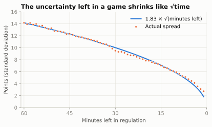
The square-root law holds remarkably well: from the opening kickoff to five minutes left, the spread is a nearly constant 1.83 points per square-root minute. With a whole game left it is about 14 points, which matches a famous number: in 1991 the statistician Hal Stern showed that NFL final margins scatter around the betting line with a standard deviation of about 14 points, close enough to a normal (bell-shaped) distribution that you can turn a point spread into a win probability with a table from a statistics textbook. Three years later he extended the idea within a game, treating the score as a Brownian motion, the continuous version of a random walk.3 The argument fits in one line: if the rest of the game adds a normally distributed amount to the effective lead, with mean zero and standard deviation \(\sigma\sqrt{t}\), then the team wins whenever that amount doesn’t wipe out its lead, and
\[ \text{WP} = \Phi\left(\frac{\text{lead} + \text{EP}}{\sigma\sqrt{t + \tau}}\right) \]
where \(\Phi\) is the normal cumulative distribution (the share of a bell curve below a point), \(t\) is the minutes left, \(\sigma\) is the spread per square-root minute, and \(\tau\) is a small cushion that stops the formula from becoming infinitely sure in the final seconds. That is a complete win probability model with two numbers to fit. The cell fits them on 2016-2024 by minimising log loss, and holds 2025 back as a test.
def Phi(z):
"""Normal CDF. NumPy has no erf, so this is the classic Abramowitz-Stegun 7.1.26
approximation (error below 2e-7), written with NumPy so it runs on whole columns."""
z = np.asarray(z, dtype=float)
x = np.abs(z) / np.sqrt(2)
t = 1 / (1 + 0.3275911 * x)
poly = t * (0.254829592 + t * (-0.284496736 + t * (1.421413741
+ t * (-1.453152027 + t * 1.061405429))))
return 0.5 * (1 + np.sign(z) * (1 - poly * np.exp(-x * x)))
def log_loss(p, y):
p = np.clip(p, 1e-4, 1 - 1e-4)
return -np.mean(y * np.log(p) + (1 - y) * np.log(1 - p))
train, test = snaps[snaps.season <= 2024], snaps[snaps.season == 2025].copy()
grid = [(log_loss(Phi(train.eff_lead / (s * np.sqrt(train.minutes + tau))), train.win), s, tau)
for s in np.arange(1.70, 2.21, 0.025) for tau in (0.5, 1, 1.5, 2, 2.5, 3, 4)]
_, SIG, TAU = min(grid)
def wp_model(lead, ep, minutes):
"""Win probability for the team with the ball: lead and EP in points, minutes left."""
return Phi((np.asarray(lead) + np.asarray(ep))
/ (SIG * np.sqrt(np.maximum(minutes, 0) + TAU)))
test["my_wp"] = wp_model(test.score_differential, test.ep, test.minutes)
print(f"Fitted: sigma = {SIG:.3f} points per root-minute, tau = {TAU} minutes")Fitted: sigma = 1.925 points per root-minute, tau = 3 minutesThe fitted \(\sigma\) is 1.92, a little above the raw median of 1.83, for two reasons. The last few minutes, where the actual spread runs above the square-root line (Figure 69.1), pull it up. And log loss punishes a confident miss far more than it rewards a confident hit (if a team you gave 2% wins, log loss charges you 3.9; had you said 20%, it would charge 1.6), so a model fitted by log loss shades toward caution. With \(\tau\) = 3 minutes, here is what the model says.
Show the plotting code
def plot_wp_curves(minutes=(55, 30, 15, 5, 2)):
fig, ax = plt.subplots(figsize=(6.5, 3.6))
eff = np.linspace(-17, 17, 200)
for k, mins in enumerate(minutes):
ax.plot(eff, wp_model(eff, 0, mins), color=style.SERIES[k], lw=2, label=f"{mins} min left")
ax.axhline(0.5, color=style.BASELINE, lw=1)
ax.axvline(0, color=style.BASELINE, lw=1)
ax.set_xlim(-17, 17)
ax.set_ylim(0, 1)
ax.set_xticks(range(-14, 15, 7))
pct_axis(ax)
ax.set_xlabel("Effective lead (points): score margin + EP of the possession")
ax.set_ylabel("Win probability")
ax.set_title("Same lead, different clock")
ax.legend(loc="upper left", fontsize=8)
plt.show()plot_wp_curves()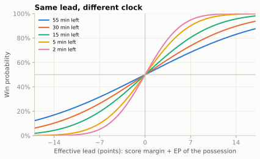
Read the chart the way a coach feels a game. With 55 minutes left, even a 14-point effective lead is only about 83%: there is a lot of football left. With two minutes left, a 7-point effective lead is 95%. And every curve passes through 50% at an effective lead of zero, which is a reminder that the model knows nothing about which teams are playing.
How good is two numbers?
The fair test is the 2025 season, which the model never saw. Three models score every 2025 regulation snap: ours; nflverse’s wp, a gradient-boosted tree model (XGBoost) with about a dozen inputs; and nflverse’s vegas_wp, the same kind of model also told the pregame point spread, the betting market’s forecast of the final margin (“New England by 3”, the line the broadcast quotes in How to Watch a Broadcast), so it knows which team was expected to win.4 Two scores are used. The log loss (from 13-02: the average of −log of the probability given to what actually happened) punishes confident misses hardest. The Brier score is the average squared gap between the probability and the outcome (1 for a win, 0 for a loss); lower is better, and a model that always said 50% would score 0.25. The Brier score is also how Film Study and Charting will grade your own predictions.
t25 = test[test.wp.notna() & test.vegas_wp.notna()]
md_table(pd.DataFrame({
"model (2025 regular season)": ["Random walk (this chapter, 2 numbers)",
"nflverse wp (XGBoost)", "nflverse vegas_wp (+ point spread)",
"Always 50%"],
"log loss": [log_loss(t25.my_wp, t25.win), log_loss(t25.wp, t25.win),
log_loss(t25.vegas_wp, t25.win), log_loss(np.full(len(t25), .5), t25.win)],
"Brier score": [((t25.my_wp - t25.win) ** 2).mean(), ((t25.wp - t25.win) ** 2).mean(),
((t25.vegas_wp - t25.win) ** 2).mean(), 0.25]}), digits=4)| model (2025 regular season) | log loss | Brier score |
|---|---|---|
| Random walk (this chapter, 2 numbers) | 0.5057 | 0.1704 |
| nflverse wp (XGBoost) | 0.5037 | 0.1699 |
| nflverse vegas_wp (+ point spread) | 0.4761 | 0.1579 |
| Always 50% | 0.6931 | 0.2500 |
Two numbers do almost exactly as well as the machine-learning model. That is less a compliment to our model than a lesson about what win probability is: most of it is the score, the clock and the value of the possession, and a random walk captures exactly those. What moves the needle is information about the teams: the point-spread version wins clearly, because a 4-point lead for the better team is worth more than the same lead for the worse one. Keep that in mind on Sunday. A broadcast bar built without the spread is describing an average team in this team’s shoes.
CautionCommon misconception
“Win probability is the betting odds.” It isn’t, unless the model was given the betting line. nflverse publishes both: wp treats the teams as interchangeable (plus home field), vegas_wp starts from the pregame spread and lets that information fade as the game goes on. Broadcast models differ, and most don’t say which they use. When two win-probability numbers for the same moment disagree by 10 points early in a game, the likeliest reason is that one of them knows who is favoured.
What the real models add
Our model is a teaching model, and it is worth being precise about what it leaves out, because every item on this list reappears when we use it for decisions:
- Timeouts. A trailing team with three timeouts can stop the clock three times; ours can’t tell.
- Who gets the ball at halftime. The team receiving the second-half kickoff has an extra possession in hand, worth a few percentage points in a close game.
- Lumpy scoring. Points come in 3s, 7s and 8s. Down 4 late, a field goal is nearly worthless; down 3, it ties. A smooth random walk can’t see that difference, which is the main reason its spread misses in the last few minutes (Figure 69.1).
- Home field and team strength, which
vegas_wphandles through the spread.
Real models add exactly these. Brian Burke’s model at Advanced NFL Stats (begun in 2008) smoothed historical situations; later models swapped in more flexible statistical machinery, and nflfastR’s 2020 XGBoost model, the wp in today’s nflverse data, takes the score, clock, timeouts, field position, down and distance, home field and the second-half kickoff (plus the pregame spread in its second version).5 ESPN, Next Gen Stats and the networks run proprietary versions; they agree on the big picture and differ in details that matter for close decisions.
Is the model honest? Calibration
A win-probability model makes a promise: when it says 70%, the team should win about 70% of the time. Checking that promise is called checking its calibration (a forecast is calibrated when the things it calls 70% likely happen about 70% of the time; the term is taught in Film Study and Charting, where you’ll calibrate your own predictions). Sort every 2025 snap by its forecast, cut into bins, and compare each bin’s average forecast with how often those teams actually won.
bins = np.linspace(0, 1, 21)
cal = {name: t25.groupby(pd.cut(t25[col], bins, include_lowest=True), observed=True)
.agg(forecast=(col, "mean"), won=("win", "mean"))
for col, name in [("my_wp", "Random walk (this chapter)"), ("wp", "nflverse wp")]}
lo_t, hi_t = t25[t25.wp < 0.05], t25[t25.wp > 0.95]
print(f"nflverse wp under 5%: average forecast {lo_t.wp.mean():.1%}, actual wins "
f"{lo_t.win.mean():.1%} ({len(lo_t):,} snaps); over 95%: forecast {hi_t.wp.mean():.1%}, "
f"actual {hi_t.win.mean():.1%}")nflverse wp under 5%: average forecast 1.3%, actual wins 2.3% (2,704 snaps); over 95%: forecast 98.5%, actual 98.6%Show the plotting code
def plot_calibration(cal):
fig, ax = plt.subplots(figsize=(5.2, 4.6))
ax.plot([0, 1], [0, 1], color=style.BASELINE, lw=1, zorder=1)
for k, (name, c) in enumerate(cal.items()):
ax.plot(c.forecast, c.won, marker="o", ms=4.5, lw=1.2, color=style.SERIES[k], label=name)
ax.set_xlim(0, 1)
ax.set_ylim(0, 1)
fmt = plt.FuncFormatter(lambda v, _: f"{v:.0%}")
ax.xaxis.set_major_formatter(fmt)
ax.yaxis.set_major_formatter(fmt)
ax.set_xlabel("Forecast win probability")
ax.set_ylabel("Share that actually won")
ax.set_title("When the model says 70%, do teams win 70%?")
ax.legend(loc="upper left", fontsize=8)
plt.show()plot_calibration(cal)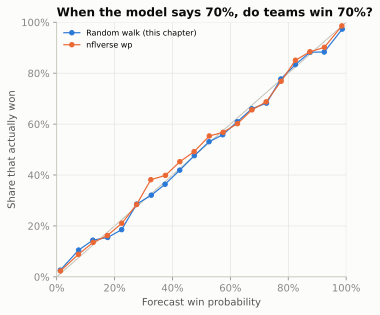
Both models sit close to the diagonal through the middle, which is where most decisions live. At the low end both are a touch overconfident: when the team with the ball was a long shot, it came back somewhat more often in 2025 than the models allowed. (At the top end nflverse’s model was on target; ours was a little too sure there as well.) There is a plausible football reason: a team far behind changes how it plays (it passes on every down and goes for it on fourth down), and the team ahead often turns conservative, while the models learned from all situations, most of them played straight.
CautionCommon misconception
“The model said 99% and they lost, so the model was wrong.” A probability is a claim about many games, not one. The Falcons’ 99% means that teams in their position lose about one time in a hundred, and in Super Bowl LI they did. Over a decade there are hundreds of games in which somebody reached 99%, so a few historic collapses are not evidence that the model is broken; a flood of them would be. Judge a forecaster by its calibration, the way you would judge a weather forecaster by whether it rains on about 30% of the days it says “30%.”
Super Bowl LI, play by play
A win-probability model gives every play a score. WPA (win probability added) is the change in a team’s win probability from just before a play to just after it: the WP version of EPA. Add up a team’s WPA over a game and you get its final result (1 for a win) minus its starting win probability, so WPA tells you how the game was won, play by play.
One unit needs pinning down before the numbers start, because this chapter mixes two kinds of points. Win probability is a percentage, so its changes are measured in percentage points. This chapter calls one percentage point of win probability a WP point: a play that moves a team from 40% to 43% is worth +3 WP points. “Points” on their own always means the scoreboard. Here is Super Bowl LI through nflverse’s model.
sb = raw[raw.game_id == "2016_21_NE_ATL"].copy() # Atlanta was the designated home team
sb["elapsed"] = (sb.qtr - 1) * 15 + 15 - sb.quarter_seconds_remaining / 60
sb = sb[sb.home_wp.notna()]
sb["ne_wpa"] = -(sb.home_wp_post - sb.home_wp) # New England's WPA on each play
peak = sb.loc[sb.home_wp.idxmax()]
strip = sb[(sb.qtr == 4) & sb.desc.str.contains("Hightower")].iloc[0]
print(f"Atlanta at kickoff: wp {sb.home_wp.iloc[0]:.1%}, vegas_wp {sb.vegas_home_wp.iloc[0]:.1%}")
print(f"Atlanta's peak WP: {peak.home_wp:.1%} (vegas_wp version {sb.vegas_home_wp.max():.1%})")
print(f"Hightower strip-sack, Q4 8:31: Atlanta {strip.home_wp:.1%} -> {strip.home_wp_post:.1%}")Atlanta at kickoff: wp 56.7%, vegas_wp 38.6%
Atlanta's peak WP: 99.4% (vegas_wp version 98.7%)
Hightower strip-sack, Q4 8:31: Atlanta 99.4% -> 95.6%Show the plotting code
def plot_sb51(sb):
fig, ax = plt.subplots(figsize=(6.6, 3.9))
ax.plot(sb.elapsed, sb.home_wp, color=style.SERIES[1], lw=2, label="Atlanta WP (nflverse wp)",
drawstyle="steps-post")
ax.plot(sb.elapsed, sb.vegas_home_wp, color=style.SERIES[1], lw=1, ls=(0, (3, 2)),
alpha=0.8, label="Atlanta WP, with point spread", drawstyle="steps-post")
ax.axhline(0.5, color=style.BASELINE, lw=1)
for q in (15, 30, 45, 60):
ax.axvline(q, color=style.GRID, lw=0.8, zorder=0)
ax.text(60.4, 0.03, "OT", fontsize=7.5, color=style.INK_2)
notes = [ # (elapsed minute, wp to point at, text, text x, text y, corner the leader leaves from)
(36.5, 0.990, "28-3 (8:31, Q3)", 24.0, 0.62, (1, 1)),
(51.5, 0.994, "Hightower strip-sack (8:31, Q4:\nsame clock, one quarter later)", 30.0, 0.44, (1, 1)),
(56.1, 0.960, "Sack + holding push ATL\nout of FG range (3:56)", 40.0, 0.27, (1, 1)),
(57.6, 0.924, "Edelman catch\n(2:28)", 49.5, 0.11, (1, 1)),
(59.05, 0.606, "28-28 after\nTD + 2 (0:57)", 61.2, 0.86, (0, 0)),
]
for x0, y0, text, tx, ty, corner in notes:
ax.annotate(text, (x0, y0), (tx, ty), fontsize=7, color=style.INK, ha="left", va="center",
bbox=dict(boxstyle="round,pad=0.25", fc=style.SURFACE, ec=style.BASELINE, lw=0.5),
arrowprops=dict(arrowstyle="-", color=style.INK_2, lw=0.7, shrinkA=0, shrinkB=2,
relpos=corner))
ax.set_xlim(0, 70)
ax.set_ylim(0, 1.02)
ax.set_xticks([0, 15, 30, 45, 60], ["Kickoff", "Q2", "Q3", "Q4", "End of\nregulation"])
pct_axis(ax)
ax.set_ylabel("Atlanta's win probability")
ax.set_title("Super Bowl LI: Patriots 34, Falcons 28 (OT)")
ax.legend(loc="lower left", fontsize=7.5)
plt.show()plot_sb51(sb)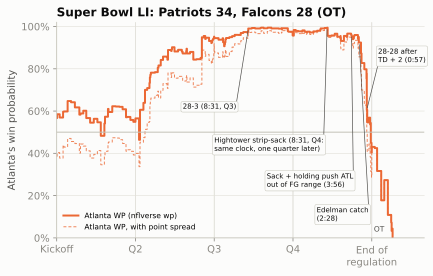
Before the swings, notice where the two lines start. The solid line has Atlanta at about 57% at kickoff, although New England was the favourite. That is the misconception callout above in action: nflverse’s wp doesn’t know who is better, and it gives home field to the designated home team, which in a Super Bowl at a neutral site was Atlanta. The spread version starts at 39%, because it was told New England was better, and the two lines converge as the score takes over. The biggest single swings tell the story more compactly than any highlight package:
TAGS = [("INTERCEPTED", "INTERCEPTION"), ("FUMBLES", "FUMBLE"), ("sacked", "SACK"),
("TOUCHDOWN", "TD"), ("ATTEMPT SUCCEEDS", "2-PT GOOD")]
def short_desc(d, n=52):
"""Play text without clock, formation tags, tacklers and jersey numbers, cut at a word,
plus a tag for what happened (an interception or touchdown can fall after the cut)."""
tags = [tag for word, tag in TAGS if word in d]
d = re.sub(r"\(\d+:\d+\)|\((Shotgun|No Huddle)\)|\([^)]*\d+-[A-Z][^)]*\)|\[[^\]]*\]", "", d)
d = re.sub(r"\b\d+-[A-Z]\.", "", d) # "12-T.Brady" -> "Brady"
d = re.sub(r"\s+", " ", d).strip()
d = d if len(d) <= n else d[:n].rsplit(" ", 1)[0] + " ..."
return d + (f" [{', '.join(tags)}]" if tags else "")
top = sb.reindex(sb.ne_wpa.abs().sort_values(ascending=False).index).head(8)
ne_score = np.where(top.posteam == "NE", top.posteam_score, top.defteam_score)
atl_score = np.where(top.posteam == "NE", top.defteam_score, top.posteam_score)
md_table(pd.DataFrame({
"when": top.qtr.map({1: "Q1", 2: "Q2", 3: "Q3", 4: "Q4", 5: "OT"}) + " "
+ (top.quarter_seconds_remaining // 60).astype(int).astype(str) + ":"
+ (top.quarter_seconds_remaining % 60).astype(int).astype(str).str.zfill(2),
"NE-ATL": [f"{a:.0f}-{b:.0f}" for a, b in zip(ne_score, atl_score)],
"play": top.posteam + ": " + top.desc.map(short_desc),
"NE WPA": 100 * top.ne_wpa}), widths=[7, 7, 52, 7])| when | NE-ATL | play | NE WPA |
|---|---|---|---|
| Q4 0:57 | 26-28 | NE: TWO-POINT CONVERSION ATTEMPT. Brady pass to … [2-PT GOOD] | 17.2 |
| OT 12:37 | 28-28 | NE: Brady pass short left to Edelman to ATL 25 for 15 … | 16.5 |
| Q2 14:19 | 0-0 | NE: Blount left tackle to ATL 29 for 4 yards . FUMBLES … [FUMBLE] | -14.2 |
| OT 13:59 | 28-28 | NE: Brady pass short left to Hogan to ATL 37 for 18 … | 13.9 |
| OT 14:26 | 28-28 | NE: Brady pass short right to Amendola ran ob at NE 45 … | 10.8 |
| Q2 15:00 | 0-0 | NE: Brady pass deep right to Edelman to ATL 33 for 27 … | 10.1 |
| Q2 2:36 | 0-14 | NE: Brady pass short left intended for Amendola … [INTERCEPTION, TD] | -9.8 |
| OT 13:12 | 28-28 | NE: Brady pass short left to White to ATL 40 for -3 … | -9.6 |
The table shows New England’s WPA in WP points, with the score before each play. Three things are worth noticing. First, most of the comeback’s scoring plays are not on the list. New England’s touchdown late in the third quarter, its field goal, and its touchdown and two-pointer with 5:56 left barely moved the needle, because down 19, 16 or even 8, with Atlanta about to get the ball back, still meant needing everything to go right. Second, the biggest swings are the tying two-point conversion and the overtime plays: from down 2 with under a minute left, two points turned a probable loss into a coin flip, and in overtime the next score would end the game. Third, turnovers in a close game are expensive at any time. LeGarrette Blount’s fumble and Robert Alford’s pick-six came in the second quarter, but at 0-0 and 14-0 they moved win probability about as much as anything in the fourth. One row deserves suspicion: a 27-yard completion on the first snap of the second quarter, at 0-0, is worth about 10 WP points here, more than any sensible model should give one first-half gain. nflverse’s WP can jump at the change of quarter, so read single early swings loosely. Notice too what the model did not do: Atlanta’s 99% never “changed its mind” at a single moment. It decayed through a long series of plays that each moved it a little, until the final four minutes, when the leverage of every snap exploded.
NoteFilm room: Falcons 2016, Super Bowl LI
The play that analysts point to came with 4:40 left. Atlanta, leading 28-20, had first-and-10 at the New England 22, already in field-goal range. The textbook plan was to run the ball three times, make New England spend its timeouts (it had all three; Atlanta had one), and then kick the field goal for 31-20, an 11-point lead, two scores, with about two minutes left. Instead, after a first-down run the Falcons threw on second down; Matt Ryan was sacked by Trey Flowers for a 12-yard loss, a holding penalty on the next snap pushed them back another 10 yards, and they punted.6
lead_d = reg[(reg.qtr == 4) & reg.game_seconds_remaining.between(180, 240) & (reg.down == 1)
& (reg.ydstogo == 10) & reg.yardline_100.between(60, 80)]
first_snap = lead_d.drop_duplicates("game_id")
down11 = first_snap[first_snap.score_differential.between(-11, -9)]
down8 = first_snap[first_snap.score_differential == -8]
print(f"Teams starting a drive 9-11 points down with 3-4 minutes left won "
f"{down11.win.mean():.1%} of {len(down11)}; 8 points down: {down8.win.mean():.1%} of {len(down8)}")Teams starting a drive 9-11 points down with 3-4 minutes left won 1.3% of 75; 8 points down: 10.5% of 19What to notice: the gap between “one score” and “two scores.” In 2016-2025, teams that started a drive down 9 to 11 points with three to four minutes left won about one game in 75; down 8, about one in 10. The samples are small, but the direction is the lesson of lumpy scoring: the three points the Falcons left on the field were worth far more than three points. Atlanta’s offensive coordinator and play-caller that season was Kyle Shanahan, who has called the second-down sack the play he regrets most (“I wish I had dialed something up differently”) while rejecting the idea that simply running the ball would have won the game.7 (The next day the 49ers announced him as their head coach; that offense is the subject of Case Study: The Shanahan Tree.)
Leverage: which moments matter
Some plays can move win probability a lot, and most can’t. Leverage puts a number on that. The leverage of a game situation is how much the next play is expected to move win probability, in either direction, relative to an average play: leverage 1 is an ordinary snap, 3 means the next play typically moves WP three times as much. (The idea, and the name “leverage index,” come from baseball analyst Tom Tango; football analysts borrowed it.8) Measuring it takes one line: average the absolute WPA of real plays in each situation, and divide by the average over all plays.
lv = reg[reg.play_type.isin(["pass", "run"]) & reg.wpa.notna() & reg.down.notna()].copy()
lv["abs_wpa"] = lv.wpa.abs()
lv["time"] = pd.cut(lv.game_seconds_remaining, [-1, 120, 300, 600, 900, 1800, 2700, 3600],
labels=["Q4\nlast 2", "Q4\n2-5", "Q4\n5-10", "Q4\n10-15", "Q3", "Q2", "Q1"])
lv["margin"] = pd.cut(lv.score_differential, [-100, -17, -9, -4, -1, 0, 3, 8, 16, 100],
labels=["down 17+", "down 9-16", "down 4-8", "down 1-3", "tied",
"up 1-3", "up 4-8", "up 9-16", "up 17+"])
LI = lv.pivot_table(index="margin", columns="time", values="abs_wpa", aggfunc="mean",
observed=False) / lv.abs_wpa.mean()
LI = LI[LI.columns[::-1]] # Q1 on the left, the end of the game on the right
srt = np.sort(lv.abs_wpa.to_numpy())[::-1]
top10 = srt[: len(srt) // 10].sum() / srt.sum()
li_peak = LI.loc["down 1-3"].iloc[-1] # trailing by 1-3, last two minutes
print(f"Average |WPA| per play: {100 * lv.abs_wpa.mean():.1f} WP points; "
f"the top 10% of plays account for {top10:.0%} of all WP movement")Average |WPA| per play: 2.5 WP points; the top 10% of plays account for 39% of all WP movementShow the plotting code
def plot_leverage(LI):
cmap = LinearSegmentedColormap.from_list("lv", ["#f7f6f2"] + style.SEQUENTIAL_BLUE)
fig, ax = plt.subplots(figsize=(6.5, 4.0))
ax.imshow(LI.values, cmap=cmap, vmin=0, vmax=3.4, aspect="auto")
for i in range(LI.shape[0]):
for j in range(LI.shape[1]):
v = LI.values[i, j]
ax.text(j, i, f"{v:.1f}", ha="center", va="center", fontsize=7.5,
color="white" if v > 1.9 else style.INK)
ax.set_xticks(range(LI.shape[1]), LI.columns, fontsize=7.5)
ax.set_yticks(range(LI.shape[0]), LI.index, fontsize=7.5)
ax.set_xlabel("Time left")
ax.set_ylabel("Offense's margin")
ax.set_title("Leverage: how much the next play can matter")
ax.grid(False)
ax.tick_params(length=0)
plt.show()plot_leverage(LI)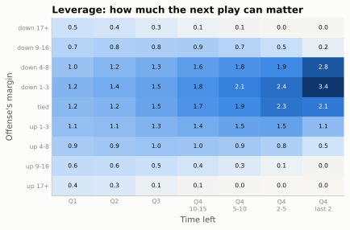
The table formalises what every fan feels. A tied game in the first quarter is about an ordinary snap. Down 1-3 with under two minutes left, a play matters about 3 times as much. Up or down 17, even the first quarter is quieter than average, and late it is essentially zero. And leverage is concentrated: the top tenth of plays carry 39% of all the win-probability movement in a season.
ImportantWhy it exists
Leverage answers a question every other number dodges: does this play matter? It is why analysts use the garbage-time filter (low-leverage plays are played differently and tell you little about a team), why “clutch” statistics are so noisy (the high-leverage sample is small), and why WPA, which weights every play by its leverage, is a better description of who won a game while EPA is a better measure of who played well. A quarterback’s interception in a tied game with a minute left and the same interception up 24 cost about the same EPA and wildly different WPA. Which matters depends on the question: for “how good is he?” use EPA; for “what decided this game?” use WPA.
Fourth down as a decision tree
Now the decisions. On fourth down a coach has three options, and each one is a small probability tree:
- Go for it. With probability \(p\) you convert and keep the ball; with probability \(1-p\) the opponent takes over where you stand.
- Kick a field goal. With probability \(q\) you score 3 and kick off; otherwise the opponent takes over at the spot of the kick (or at its own 20, whichever is better for it).
- Punt. The opponent takes over somewhere downfield, on average.
Put the win probability of each outcome at the end of each branch, multiply through, and pick the largest. That is all a fourth-down model is: a conversion model, a field-goal model, a punt model, and a win-probability model to price the outcomes. The Clock, the Two-Minute Drill, and Fourth Down did this in expected points. Doing it in win probability lets the score and the clock in.
The ingredients
Every ingredient comes from the same ten seasons of data. Start with the two probabilities that drive everything: converting, and making the kick.
def fit_logit(X, y, iters=30):
"""Logistic regression by Newton's method: returns the weights."""
w = np.zeros(X.shape[1])
for _ in range(iters):
p = 1 / (1 + np.exp(-X @ w))
H = (X * (p * (1 - p))[:, None]).T @ X
w += np.linalg.solve(H, X.T @ (y - p))
return w
plays = reg[reg.play_type.isin(["pass", "run"]) & (reg.qb_kneel != 1) & (reg.qb_spike != 1)]
att4 = plays[plays.down == 4].assign(conv=lambda t: (t.yards_gained >= t.ydstogo).astype(float))
att3 = plays[plays.down == 3].assign(conv=lambda t: (t.yards_gained >= t.ydstogo).astype(float))
# Conversion: logistic in log(yards to go) and yards to go, plus a red-zone term (inside the
# opponent's 10 the field is compressed), fitted on fourth-down attempts.
def conv_features(togo, yl):
k = np.clip(np.asarray(togo, float), 1, 20)
return np.column_stack([np.ones(k.size), np.log(k), k,
(np.asarray(yl, float) <= 10).astype(float).ravel()])
X4, y4 = conv_features(att4.ydstogo, att4.yardline_100), att4.conv.to_numpy()
W_CONV = fit_logit(X4, y4)
def p_conv(togo, yl=50):
"""Chance a league-average offense converts: yards to go, and yardline_100 (default midfield)."""
togo, yl = np.broadcast_arrays(np.asarray(togo, float), np.asarray(yl, float))
return (1 / (1 + np.exp(-conv_features(togo.ravel(), yl.ravel()) @ W_CONV))).reshape(togo.shape)
# Field goals: logistic in kick distance, 2021-2025 (today's kickers are better than 2016's).
fgs = reg[(reg.play_type == "field_goal") & (reg.season >= 2021)]
W_FG = fit_logit(np.column_stack([np.ones(len(fgs)), fgs.kick_distance]),
(fgs.field_goal_result == "made").astype(float).to_numpy())
def p_fg(distance):
return 1 / (1 + np.exp(-(W_FG[0] + W_FG[1] * np.asarray(distance, float))))
print(f"{len(att4):,} fourth-down attempts; conversion model at 1, 2, 4, 7, 10 to go: "
+ ", ".join(pct(p_conv(k)) for k in (1, 2, 4, 7, 10)))
print(" ... the same distances inside the opponent's 10: "
+ ", ".join(pct(p_conv(k, 8)) for k in (1, 2, 4, 7, 10)))
print(f"{len(fgs):,} field-goal tries 2021-2025; make rate at 30, 40, 50, 55, 60 yards: "
+ ", ".join(pct(p_fg(k)) for k in (30, 40, 50, 55, 60)))6,664 fourth-down attempts; conversion model at 1, 2, 4, 7, 10 to go: 69%, 61%, 50%, 39%, 30%
... the same distances inside the opponent's 10: 60%, 52%, 41%, 31%, 23%
5,285 field-goal tries 2021-2025; make rate at 30, 40, 50, 55, 60 yards: 96%, 89%, 74%, 64%, 51%Show the plotting code
def plot_ingredients(att4, att3, fgs):
fig, (a1, a2) = plt.subplots(1, 2, figsize=(6.6, 3.2))
k4 = att4.groupby(att4.ydstogo.clip(upper=10)).conv.agg(["mean", "size"])
k3 = att3.groupby(att3.ydstogo.clip(upper=10)).conv.mean()
xs = np.linspace(1, 10, 100)
a1.plot(xs, p_conv(xs), color=style.SERIES[0], lw=2, label="Fitted, between the 10s")
a1.plot(xs, p_conv(xs, 8), color=style.SERIES[0], lw=1.2, ls=(0, (3, 2)),
label="Fitted, inside the opp 10")
a1.scatter(k4.index, k4["mean"], s=8 + k4["size"] / 25, color=style.SERIES[0], alpha=0.8,
edgecolor=style.SURFACE, linewidth=0.6, zorder=3, label="4th-down attempts")
a1.scatter(k3.index, k3, s=14, marker="D", color=style.SERIES[1], zorder=3, label="3rd downs")
a1.set_xticks(range(1, 11), [str(k) for k in range(1, 10)] + ["10+"])
a1.set_ylim(0, 0.8)
a1.set_xlabel("Yards to go")
a1.set_ylabel("Converted")
a1.set_title("Converting", fontsize=10)
a1.legend(loc="upper right", fontsize=6.3)
fb = fgs.assign(b=(fgs.kick_distance // 3) * 3 + 1.5).groupby("b").agg(
make=("field_goal_result", lambda s: (s == "made").mean()), n=("field_goal_result", "size"))
fb = fb[fb.n >= 15]
d_ = np.linspace(18, 66, 100)
a2.plot(d_, p_fg(d_), color=style.SERIES[2], lw=2, label="Fitted")
a2.scatter(fb.index, fb.make, s=14, color=style.SERIES[2], edgecolor=style.SURFACE,
linewidth=0.6, zorder=3, label="Actual, 3-yd bins")
a2.set_ylim(0, 1.02)
a2.set_xlabel("Kick distance (yards)")
a2.set_title("Field goals, 2021-2025", fontsize=10)
a2.legend(loc="lower left", fontsize=6.8)
pct_axis(a1, a2)
fig.tight_layout()
plt.show()plot_ingredients(att4, att3, fgs)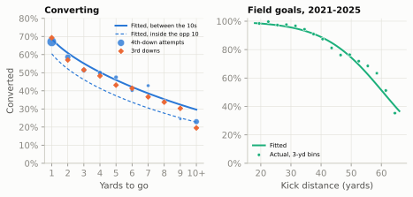
The third-down comparison deserves a sentence of its own. You might worry that fourth-down conversion rates are flattering, because teams go for it only when they like their chances. Third downs have much less of that selection, since every team faces them and nearly every team runs a play, and the selection they do have runs both ways: give-up draws and screens on third-and-long drag the long rates down, while a team already planning to use fourth down calls its third down differently. Third and fourth downs still convert at almost the same rates, which is why analysts’ fourth-down models often fit the conversion model on both downs together.
Field position matters in one place. Inside the opponent’s 10 the end zone caps how deep the offense can throw and every defender can sit near the sticks, so the same distance converts less often: on third and fourth downs from 2016 to 2025, third-and-3 or fourth-and-3 inside the 10 converted 44% of the time against 53% between the 20s. The model’s red-zone term carries that penalty (the dashed curve).
The remaining ingredients describe where the ball ends up. The field-goal distance is the yard line plus 18: the 10-yard end zone, and about 8 yards back to the holder (an extra point snapped from the 15 is a 33-yard kick). A punt’s result depends on where it is kicked from; the cell measures it. Since the 2025 kickoff rules moved the touchback to the 35, a kickoff after a score gives the receiving team the ball a few yards further out than it used to; the cell measures where, from 2025 data. And a conversion usually gains more than it needed: the median conversion goes a few yards past the line to gain, and some go all the way.
ordered = reg.sort_values(["game_id", "play_id"])
nxt = ordered.groupby("game_id")[["yardline_100", "posteam", "down"]].shift(-1)
# Punts: where does the opponent's next snap start, by where the punt was kicked from?
pu = ordered[(ordered.play_type == "punt") & (ordered.season >= 2021)]
pn = nxt.loc[pu.index]
ok = (pn.posteam.to_numpy() != pu.posteam.to_numpy()) & pn.yardline_100.notna().to_numpy()
punt_from, punt_to = pu.yardline_100[ok].clip(35, 95), pn.yardline_100[ok]
PUNT = np.polyfit(punt_from, punt_to, 2)
def punt_spot(yl):
"""Opponent's yardline_100 after a punt from yardline_100 = yl."""
return np.clip(np.polyval(PUNT, np.clip(yl, 35, 99)), 1, 92)
# Kickoffs after a score (2025 rules): the receiving team's first snap.
ko = ordered[(ordered.play_type == "kickoff") & (ordered.season == 2025)]
KO_SPOT = nxt.loc[ko.index].query("down == 1").yardline_100.mean()
# Yards gained beyond the line to gain on fourth-down conversions (a distribution, 0-60).
won = att4[att4.conv == 1]
EXTRA = np.bincount((won.yards_gained - won.ydstogo).clip(0, 60).astype(int), minlength=61)
EXTRA = EXTRA / EXTRA.sum()
# First-and-10 (or first-and-goal) expected points by yard line: nflverse's EP, averaged.
f10 = snaps[(snaps.down == 1) & ((snaps.ydstogo == 10) | (snaps.goal_to_go == 1))
& (snaps.half_seconds_remaining > 120)]
EP1 = (f10.groupby("yardline_100").ep.mean().reindex(range(1, 100)).interpolate()
.rolling(5, center=True, min_periods=1).mean())
def ep1(yl):
return np.interp(yl, EP1.index, EP1.to_numpy())
print(f"Punt from own 30 -> opponent at its own {100 - punt_spot(70):.0f}; from midfield -> "
f"its own {100 - punt_spot(50):.0f}; from opp 40 -> its own {100 - punt_spot(40):.0f}")
print(f"After a 2025 kickoff the receiving team starts at its own {100 - KO_SPOT:.0f}")
print(f"Median yards past the line to gain on a conversion: "
f"{np.searchsorted(np.cumsum(EXTRA), 0.5)}")Punt from own 30 -> opponent at its own 26; from midfield -> its own 13; from opp 40 -> its own 11
After a 2025 kickoff the receiving team starts at its own 31
Median yards past the line to gain on a conversion: 3The decision function
Everything is now in place. The function below takes a fourth down (the offense’s lead, its yard line, the yards to go and the minutes left) and returns the win probability of each option, plus the break-even conversion rate: the chance of converting at which going for it and the best kick are worth the same. It is about thirty lines, and every line is one branch of the tree.
One trick runs through it. wp_model always answers for the team with the ball. Whenever a branch ends with the opponent in possession (a failed attempt, a punt, any kick), the code asks the model for the opponent’s win probability, from the opponent’s side (its lead is minus ours, its field position is measured from our goal line), and subtracts that from 1. That is what every 1 - wp_model(-lead, ...) means.
YDS = np.arange(len(EXTRA))
def decide(lead, yl, togo, minutes):
"""Win probability of going for it, kicking a field goal and punting, for the offense.
lead: offense's margin; yl: yardline_100; togo: yards to go; minutes: left in regulation.
Arrays of fourth downs are fine: every argument broadcasts."""
lead, yl, togo, mins = (np.atleast_1d(np.asarray(a, float)) for a in (lead, yl, togo, minutes))
t = mins - 0.1 # the play itself takes ~6 seconds
# GO, success: first down somewhere past the marker (or a touchdown, then kick off)
spot = yl[:, None] - togo[:, None] - YDS[None, :]
td = spot <= 0
wp_td = 1 - wp_model(-(lead[:, None] + 7), ep1(KO_SPOT), t[:, None])
wp_1st = wp_model(lead[:, None], ep1(np.clip(spot, 1, 99)), t[:, None])
succ = (np.where(td, wp_td, wp_1st) * EXTRA[None, :]).sum(axis=1)
# GO, failure: the opponent takes over where the ball is
fail = 1 - wp_model(-lead, ep1(100 - yl), t)
p = p_conv(togo, yl)
go = p * succ + (1 - p) * fail
# FIELD GOAL: make -> +3 and kick off; miss -> opponent at the spot of the kick (or its 20)
dist = yl + 18
q = np.where(dist <= 70, p_fg(dist), 0.0)
miss_spot = np.where(yl + 8 >= 20, 100 - (yl + 8), 80)
fg = (q * (1 - wp_model(-(lead + 3), ep1(KO_SPOT), t))
+ (1 - q) * (1 - wp_model(-lead, ep1(miss_spot), t)))
# PUNT: only from your own side of the opponent's 35
punt = np.where(yl >= 35, 1 - wp_model(-lead, ep1(punt_spot(yl)), t), np.nan)
kick = np.fmax(fg, punt) # the better kicking option
return pd.DataFrame({"go": go, "fg": fg, "punt": punt, "kick": kick,
"gain": go - kick, "p_conv": p, "p_fg": q,
"wp_succ": succ, "wp_fail": fail,
"breakeven": (kick - fail) / (succ - fail)})The break-even rate is the one number to carry out of this chapter. Going for it is worth \(p \cdot \text{WP}_\text{success} + (1-p)\cdot \text{WP}_\text{fail}\), and it equals the best kick when
\[ p^{*} = \frac{\text{WP}_\text{kick} - \text{WP}_\text{fail}}{\text{WP}_\text{success} - \text{WP}_\text{fail}}. \]
The numerator is what you give up by not kicking even if you fail; the denominator is how much converting is worth over failing. If your honest estimate of this play against this defense beats \(p^{*}\), go. It turns the argument from “should we go for it?”, which invites gut feeling, into “do we convert more than \(p^{*}\) of the time here?”, which invites evidence.
A worked example: the Lions at San Francisco, January 2024
The decision that The Clock, the Two-Minute Drill, and Fourth Down and The Modern Era both describe: the NFC Championship Game, third quarter, 7:03 left. Detroit leads San Francisco 24-10 and faces fourth-and-2 at the 49ers’ 28. A field goal would be a 46-yarder.9
cc = raw[raw.game_id == "2023_21_DET_SF"]
d1 = cc[(cc.down == 4) & (cc.posteam == "DET") & (cc.qtr == 3) & (cc.yardline_100 == 28)].iloc[0]
d2 = cc[(cc.down == 4) & (cc.posteam == "DET") & (cc.qtr == 4) & (cc.yardline_100 == 30)].iloc[0]
lions = decide([d1.score_differential, d2.score_differential], [d1.yardline_100, d2.yardline_100],
[d1.ydstogo, d2.ydstogo],
[d1.game_seconds_remaining / 60, d2.game_seconds_remaining / 60])
L1, L2 = lions.iloc[0], lions.iloc[1]
# The two field-goal branches for the tree: a make (up 17, kick off) and a miss (SF ball at its 36)
t1 = d1.game_seconds_remaining / 60 - 0.1
make_wp = float(1 - wp_model(-(d1.score_differential + 3), ep1(KO_SPOT), t1))
miss_wp = float(1 - wp_model(-d1.score_differential, ep1(100 - (d1.yardline_100 + 8)), t1))
md_table(pd.DataFrame({
"decision": ["4th & 2 at SF 28, up 24-10, 7:03 Q3", "4th & 3 at SF 30, down 24-27, 7:38 Q4"],
"WP go (%)": 100 * lions.go, "WP field goal (%)": 100 * lions.fg,
"gain from going (WP pts)": 100 * lions.gain, "break-even (%)": 100 * lions.breakeven,
"P(convert) (%)": 100 * lions.p_conv}), widths=[22, 8, 8, 10, 8, 8])| decision | WP go (%) | WP field goal (%) | gain from going (WP pts) | break-even (%) | P(convert) (%) |
|---|---|---|---|---|---|
| 4th & 2 at SF 28, up 24-10, 7:03 Q3 | 94.7 | 93.7 | 1.0 | 46.0 | 60.9 |
| 4th & 3 at SF 30, down 24-27, 7:38 Q4 | 43.5 | 36.2 | 7.3 | 34.7 | 55.1 |
Show the plotting code
from gridiron import Field
def tbox(ax, x, y, w, h, text, fc=style.SURFACE, ec=style.BASELINE, fs=7.6, bold=False):
ax.add_patch(FancyBboxPatch((x - w / 2, y - h / 2), w, h, fc=fc, ec=ec, lw=0.9, zorder=3,
boxstyle="round,pad=0.02,rounding_size=0.12"))
ax.text(x, y, text, ha="center", va="center", fontsize=fs, color=style.INK, zorder=4,
fontweight="bold" if bold else "normal", linespacing=1.25)
def tarrow(ax, p0, p1, label=None, color=style.INK_2):
ax.add_patch(FancyArrowPatch(p0, p1, arrowstyle="-|>", mutation_scale=9, color=color,
lw=1.0, shrinkA=0, shrinkB=0, zorder=2))
if label:
mx, my = (p0[0] + p1[0]) / 2, (p0[1] + p1[1]) / 2
ax.text(mx, my + 0.16, label, ha="center", va="bottom", fontsize=7.2,
color=style.INK, zorder=4,
bbox=dict(boxstyle="round,pad=0.15", fc=style.SURFACE, ec="none"))
def plot_tree(L, make_wp, miss_wp):
fig = plt.figure(figsize=(6.6, 6.3))
axf = fig.add_axes([0.02, 0.61, 0.96, 0.33]) # the field, Detroit moving right
axt = fig.add_axes([0.0, 0.0, 1.0, 0.57]) # the tree
LOS = 110 - 28 # BDB x of the SF 28
Field(ax=axf, orient="horizontal", los=LOS, window=(-28, 38), to_go=2,
lateral=(15, 38.3), numbers=False)
for yl in (40, 30, 20, 10): # yard labels inside the turf
axf.text(110 - yl, 16.6, f"SF {yl}", ha="center", va="center", fontsize=6.5,
color=style.MUTED, zorder=2)
axf.text(115, 16.6, "end zone", ha="center", va="center", fontsize=6.5, color=style.MUTED)
box = dict(boxstyle="round,pad=0.2", fc=style.SURFACE, ec="none", alpha=0.9)
lead = dict(arrowstyle="-", color=style.INK_2, lw=0.7, shrinkA=0, shrinkB=3)
yb = 26.65
axf.add_patch(Circle((LOS, yb), 0.9, color=style.BALL, zorder=6))
# convert: first down about three yards past the marker (the median conversion)
CONV = LOS + 2 + 3
axf.add_patch(FancyArrowPatch((LOS + 1.0, yb), (CONV - 0.9, yb), arrowstyle="-|>",
mutation_scale=9, color=style.OFFENSE_DARK, lw=2, zorder=5))
axf.plot([CONV], [yb], marker="D", ms=6.5, color=style.OFFENSE_DARK, zorder=6)
axf.annotate("convert: first down near the\nSF 23 (or a touchdown)", (CONV, yb + 0.6),
(CONV + 4.0, 34.0), ha="left", va="center", fontsize=6.8,
color=style.OFFENSE_DARK, zorder=7, bbox=box, arrowprops=lead)
axf.annotate("fail: 49ers' ball right here,\nat their own 28", (LOS, yb - 0.9),
(LOS - 2.0, 20.4), ha="right", va="center", fontsize=6.8,
color=style.DEFENSE_DARK, zorder=7, bbox=box, arrowprops=lead)
KSPOT = LOS - 8 # holder 8 yards behind the line
axf.add_patch(Circle((KSPOT, yb), 0.6, color=style.SERIES[2], zorder=6))
axf.plot([119.6, 119.6], [23.57, 29.73], color=style.INK_2, lw=2.4, zorder=6) # goalposts
axf.add_patch(FancyArrowPatch((KSPOT, yb), (119.2, yb), arrowstyle="-|>", mutation_scale=8,
color=style.SERIES[2], lw=1.1, ls=(0, (3, 2)),
connectionstyle="arc3,rad=-0.12", zorder=5))
axf.text(KSPOT - 1.0, 34.3, "field goal from the SF 36\n(46 yards); a miss gives\nSF the ball there",
ha="right", va="center", fontsize=6.8, color=style.INK, zorder=7, bbox=box)
axf.set_title("4th & 2 at the SF 28 · Detroit 24, San Francisco 10 · 7:03, 3rd quarter",
loc="left", fontsize=9, fontweight="bold", color=style.INK)
axt.set_xlim(0, 10)
axt.set_ylim(0, 6.2)
axt.set_axis_off()
GO_C, FG_C = style.OFFENSE_TINT, "#dff3ea"
tbox(axt, 1.05, 3.1, 1.9, 1.3, "4th & 2\nSF 28\nup 14, 7:03 Q3", bold=True)
tbox(axt, 4.0, 4.6, 2.2, 1.15, f"GO FOR IT\nexpected WP {pct(L.go, 1)}", fc=GO_C, bold=True)
tbox(axt, 4.0, 1.5, 2.2, 1.15, f"FIELD GOAL\nexpected WP {pct(L.fg, 1)}", fc=FG_C, bold=True)
tarrow(axt, (2.0, 3.45), (2.9, 4.45))
tarrow(axt, (2.0, 2.75), (2.9, 1.65))
tbox(axt, 8.1, 5.55, 3.4, 0.95, f"Convert: keep the ball\nWP {pct(L.wp_succ, 1)}")
tbox(axt, 8.1, 3.95, 3.4, 0.95, f"Fail: SF ball at its 28,\nDET still up 14 · WP {pct(L.wp_fail, 1)}")
tbox(axt, 8.1, 2.15, 3.4, 0.95, f"Make: up 17, kick off\nWP {pct(make_wp, 1)}")
tbox(axt, 8.1, 0.55, 3.4, 0.95, f"Miss: SF ball at its 36\nWP {pct(miss_wp, 1)}")
tarrow(axt, (5.1, 4.85), (6.4, 5.45), pct(L.p_conv))
tarrow(axt, (5.1, 4.35), (6.4, 4.0), pct(1 - L.p_conv))
tarrow(axt, (5.1, 1.75), (6.4, 2.1), pct(L.p_fg))
tarrow(axt, (5.1, 1.25), (6.4, 0.6), pct(1 - L.p_fg))
axt.text(4.0, 3.62, f"break-even: {pct(L.breakeven)}", ha="center", va="center", fontsize=7.4,
color=style.OFFENSE_DARK, fontweight="bold")
axt.text(4.0, 3.05, f"go wins by {100 * L.gain:.1f} WP points", ha="center", va="center",
fontsize=7.4, color=style.INK)
plt.show()plot_tree(L1, make_wp, miss_wp)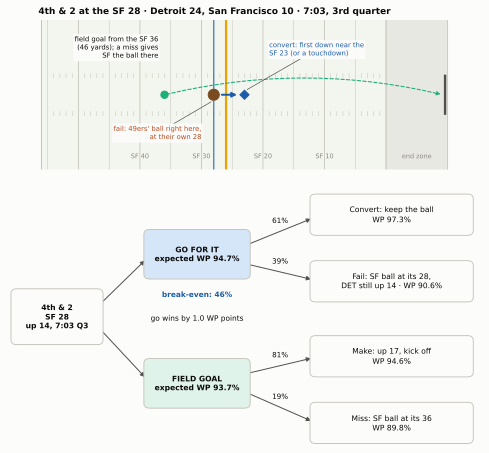
Read the tree from the right. The two outcomes of going for it are far apart only in one direction: converting pushes Detroit toward a three-score lead, while failing still leaves it up 14 with San Francisco 72 yards from the end zone. The field goal’s branches are both good but cap the upside. The break-even rate, 46%, is below the 61% that a league- average offense converts on fourth-and-2, so the model says go, by 1.0 WP points.
Now compare the professionals. On that fourth-and-2, ESPN’s model had going for it ahead by two-tenths of a point (90.5% to 90.3%), and Next Gen Stats by one point (86.8% to 85.8%).10 Three models, built three different ways, agree on the direction and on the size: close, lean go. The second decision, fourth-and-3 at the 30 trailing 27-24 with 7:38 left, is a different story. ESPN called it a near toss-up (39.1% to 38.8%), Next Gen Stats leaned go by 2.5 points, and our model says go by 7.3. That disagreement is not a rounding error. It is the signature of the part of the game where simple models are weakest: the fourth quarter, when a field goal’s 3 points are worth something quite specific (a tie) and the clock starts to matter. The next sections look at both problems, where models break and how uncertain they are, after mapping the whole field.
NoteMadden vs. real life
In Madden you can go for it on every fourth down, and the worst that happens is a lost game. A real head coach answers for every failed attempt on Monday morning, and coaches have long been judged more harshly for a failed gamble than for a “safe” kick that loses the game a little more slowly. David Romer’s 2006 paper on fourth downs, which found teams far too conservative, offered two kinds of reason: the people deciding (fans, owners or coaches) may weigh a chance of winning lost to a failed gamble more heavily than the same chance gained by a successful one, or coaches may trust experience and intuition, which lean conservative, over formal analysis.11 That is part of why the models led and the coaches followed only slowly; the measurement section below shows how slowly.
The recommendation map
Run decide() over every yard line and every distance, and the whole field becomes a map. The two panels below hold everything constant except the score and the clock: a tied game in the first quarter, and the same field with the offense leading by 4 with 8 minutes left.
Show the plotting code
def plot_fourth_map(maps, YL, YT, p_row):
cmap = LinearSegmentedColormap.from_list("go", [style.DIVERGING[2], style.DIVERGING[1],
style.DIVERGING[0]])
cmap.set_bad(style.GRID)
pmap = LinearSegmentedColormap.from_list("p", ["#f7f6f2"] + style.SEQUENTIAL_BLUE[:3])
fig = plt.figure(figsize=(6.6, 7.6))
gs = fig.add_gridspec(3, 2, width_ratios=[19, 1.5], height_ratios=[1, 1, 0.06],
hspace=0.42, wspace=0.05)
xlabels = [f"own\n{100 - y}" if y > 50 else ("50" if y == 50 else f"opp\n{y}") for y in YL]
for row, (title, m) in enumerate(maps.items()):
ax = fig.add_subplot(gs[row, 0])
gain = np.where(m["possible"], m["gain"], np.nan)
im = ax.imshow(gain, cmap=cmap, vmin=-6, vmax=6, aspect="auto")
for i in range(len(YT)):
for j in range(len(YL)):
if not m["possible"][i, j]:
continue
be = m["breakeven"][i, j]
ax.text(j, i, f"{100 * be:.0f}" if be < 1 else "—", ha="center", va="center",
fontsize=6.6, color="white" if abs(gain[i, j]) > 4 else style.INK)
edge = [np.argmax(m["fg_better"][i]) if m["fg_better"][i].any() else len(YL)
for i in range(len(YT))]
xs_, ys_ = [], []
for i, e in enumerate(edge):
xs_ += [e - 0.5, e - 0.5]
ys_ += [i - 0.5, i + 0.5]
ax.plot(xs_, ys_, color=style.INK, lw=1.4)
ax.set_xticks(range(len(YL)), xlabels, fontsize=6.3)
ax.set_yticks(range(len(YT)), [str(k) for k in YT], fontsize=7)
ax.set_ylabel("Yards to go", fontsize=8)
ax.set_title(title, loc="left", fontsize=9.5, fontweight="bold")
ax.grid(False)
ax.tick_params(length=0)
axp = fig.add_subplot(gs[row, 1])
axp.imshow(p_row[:, None], cmap=pmap, vmin=0, vmax=1, aspect="auto")
for i, v in enumerate(p_row):
axp.text(0, i, f"{100 * v:.0f}", ha="center", va="center", fontsize=6.8,
color=style.INK, fontweight="bold")
axp.set_xticks([0], ["P(conv)"], fontsize=6.3)
axp.set_yticks([])
axp.grid(False)
axp.tick_params(length=0)
cax = fig.add_subplot(gs[2, 0])
cb = fig.colorbar(im, cax=cax, orientation="horizontal", ticks=[-6, -4, -2, 0, 2, 4, 6])
cb.ax.tick_params(labelsize=7, length=0)
cb.outline.set_visible(False)
cb.set_label("Gain from going for it over the better kick (WP points): red = kick, blue = go",
fontsize=7.5)
plt.show()YL, YT = np.arange(95, 0, -5), np.arange(1, 11) # own 5 ... opponent's 5; 1 ... 10 to go
Y, T = np.meshgrid(YL, YT) # rows: yards to go; columns: field position
MAPS = {}
for lead, mins, title in [(0, 55, "Tied, first quarter"),
(4, 8, "Leading by 4, 8:00 left in the 4th quarter")]:
r = decide(np.full(Y.size, lead), Y.ravel(), T.ravel(), np.full(Y.size, mins))
MAPS[title] = {"gain": 100 * r.gain.to_numpy().reshape(Y.shape),
"breakeven": r.breakeven.to_numpy().reshape(Y.shape),
"fg_better": (r.fg > r.punt.fillna(-1)).to_numpy().reshape(Y.shape),
"possible": T <= Y}
plot_fourth_map(MAPS, YL, YT, p_conv(YT))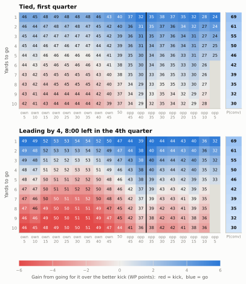
spots = [(66, 1), (50, 2), (40, 4), (40, 7), (35, 4), (70, 8)]
tie_q1 = decide(0, [yl for yl, _ in spots], [k for _, k in spots], 55)
tie_q1.index = [f"4th & {k} at yardline_100 {yl}" for yl, k in spots]
print((tie_q1[["breakeven", "p_conv", "gain"]] * 100).round(1)
.rename(columns={"breakeven": "break-even %", "p_conv": "P(convert) %", "gain": "gain, WP pts"})) break-even % P(convert) % gain, WP pts
4th & 1 at yardline_100 66 48.2 68.7 3.2
4th & 2 at yardline_100 50 39.8 60.9 3.3
4th & 4 at yardline_100 40 30.7 50.3 3.2
4th & 7 at yardline_100 40 29.8 38.6 1.5
4th & 4 at yardline_100 35 34.3 50.3 2.6
4th & 8 at yardline_100 70 44.8 35.4 -1.6Four lessons are visible on the top map, and they match the rules of thumb in The Clock, the Two-Minute Drill, and Fourth Down:
- Short yardage is blue almost everywhere. On fourth-and-1 the break-even rate is in the 40s across your own half and a league-average offense converts about two times in three, so going is right even in your own territory. On fourth-and-1 at your own 34 the model’s gain is 3.2 WP points, enough that punting there is one of the most expensive routine choices in football.
- The break-even rate falls toward the end zone, with one bump. In your own half failure hands the opponent a short field, so you need to convert almost half the time; near the goal line failure leaves the opponent pinned, and the bar drops into the mid-20s. The bump is at the black line. Just inside the opponent’s 40 the better kick switches from a punt to a field goal, and a field goal is a far better consolation prize than a punt, so the bar rises, from about 31% at the opponent’s 40 to 34% at its 35. Down each column, by contrast, the break-even rate barely moves: it is the conversion chance that collapses with distance.
- Around the opponent’s 40 is the go zone. A punt from there nets only about 30 yards and a field goal would be a 55- to 60-yarder, so the kick is weak whichever you pick. That is where the map stays blue deepest into long yardage: fourth-and-4 at the 40 is worth 3.2 WP points, and even fourth-and-7 says go by 1.5.
- Long yardage in your own half leans red (kick). Fourth-and-8 at your own 30 needs a conversion rate of about 45%, and a league-average offense converts fourth-and-8 only about 35% of the time.
The bottom map shows what win probability adds to the expected-points version. Leading by 4 late, both colours deepen: a stop on fourth-and-long in your own half now costs the lead, so the red gets redder, while a conversion on fourth-and-short lets you run clock and the blue gets bluer. The mirror image is also true (try decide(-4, ...) yourself): trailing late, kicks lose value, because a field goal doesn’t get you level, and the blue region spreads.
Where the simple model breaks, and how sure any model is
The last five minutes
Use the model on the most famous fourth down of the analytics era: Bill Belichick’s fourth-and-2 at his own 28, leading the Colts 34-28 with 2:08 left in November 2009, which Dynasties and Counterpunches tells in full.
b09 = decide([6], [72], [2], [2 + 8 / 60]).iloc[0]
print(f"Random-walk model: go {b09.go:.1%}, punt {b09.punt:.1%} -> says PUNT by "
f"{100 * (b09.punt - b09.go):.1f} WP points")
# What actually happens: drives that start in the last 1:30-2:30, trailing by 4-8 (a TD needed)
first_snaps = (reg[reg.down.notna()].sort_values(["game_id", "play_id"])
.groupby(["game_id", "drive"]).first())
late = first_snaps[(first_snaps.qtr == 4) & first_snaps.game_seconds_remaining.between(90, 150)
& first_snaps.score_differential.between(-8, -4)
& first_snaps.yardline_100.between(60, 80)]
td_after_punt = (late.fixed_drive_result == "Touchdown").mean()
print(f"Drives needing a TD from their own 20-40 with 1:30-2:30 left scored one "
f"{td_after_punt:.0%} of the time ({len(late)} drives, 2016-2025)")
# The 2009 play itself: who had timeouts?
g09 = pbp([2009], columns=["game_id", "posteam", "defteam", "down", "qtr", "yardline_100",
"posteam_timeouts_remaining", "defteam_timeouts_remaining"])
p09 = g09[(g09.posteam == "NE") & (g09.defteam == "IND") & (g09.down == 4) & (g09.qtr == 4)
& (g09.yardline_100 == 72)].iloc[0]
print(f"{p09.game_id}: New England timeouts {p09.posteam_timeouts_remaining:.0f}, "
f"Indianapolis timeouts {p09.defteam_timeouts_remaining:.0f}")Random-walk model: go 85.0%, punt 86.3% -> says PUNT by 1.4 WP points
Drives needing a TD from their own 20-40 with 1:30-2:30 left scored one 28% of the time (155 drives, 2016-2025)
2009_10_NE_IND: New England timeouts 0, Indianapolis timeouts 1Our model says punt, by about 1.4 WP points. Burke’s 2009 analysis said go, by about nine (79% to 70%),12 and the drive data show why ours is wrong here. After a punt the Colts would need a touchdown, not “some points,” from around their own 30 with two minutes left. Teams in that spot in 2016-2025 scored one about 28% of the time, close to the 30% Burke used. Our random walk instead sees an effective deficit of about four and a half points with two minutes to make it up, and it can’t tell that a field goal is worthless to Indianapolis. On the failure branch it makes the opposite mistake: Burke estimated that teams score a touchdown from about 30 yards out with two minutes left a little over half the time, while our model, seeing a 6-point deficit and a possession worth about four points, gives the Colts only about a third. Both errors favour the punt. And the play-by-play adds the input the random walk lacks entirely: Indianapolis had one timeout left and New England none.
Is the model simply worse late in games? Not on average, which is the surprising part:
band = pd.cut(t25.minutes, [0, 2, 5, 10, 15, 30, 60])
md_table(t25.groupby(band, observed=True)
.apply(lambda s: pd.Series({"snaps": len(s), "random walk": log_loss(s.my_wp, s.win),
"nflverse wp": log_loss(s.wp, s.win)}))
.reset_index().rename(columns={"minutes": "minutes left (2025)"})
.astype({"minutes left (2025)": str}), digits=3)| minutes left (2025) | snaps | random walk | nflverse wp |
|---|---|---|---|
| (0, 2] | 1,595 | 0.299 | 0.303 |
| (2, 5] | 2,277 | 0.272 | 0.272 |
| (5, 10] | 2,901 | 0.367 | 0.363 |
| (10, 15] | 2,930 | 0.406 | 0.400 |
| (15, 30] | 8,084 | 0.466 | 0.467 |
| (30, 60] | 17,841 | 0.611 | 0.608 |
Its log loss sits within about 1.5% of nflverse’s in every band, the last two minutes included. The average forecast is fine; what breaks is the comparison a decision needs. A fourth-down call asks how much better one neighbouring situation is than another (down 3 against down 4, a field goal against a touchdown, two timeouts against none), and late in a game those differences are lumpy in exactly the way a smooth random walk can’t represent, even while its average forecast stays on target. That is the job of the inputs we left out: timeouts, the exact time, and a model flexible enough to learn that “down 6 with 2 minutes” is nothing like “down 4.5 with 2 minutes.” It is also why the measurements below use the model only outside the last five minutes of the game and the last two of the first half. Five minutes is a judgement, not a law; the Lions disagreement at 7:38 shows the trouble can start earlier, so the grading is also re-run with a ten-minute cutoff.
How uncertain is the advice?
A fourth-down recommendation is an estimate built on estimates, so it has error bars. Three kinds of uncertainty are worth separating, and they are very different in size.
1. Sampling noise in the league-average inputs: small. Refit the conversion and field-goal models on resampled data (a bootstrap: draw the same number of plays at random, with replacement, and refit) and recompute the decision each time.
rng = np.random.default_rng(1303)
XF = np.column_stack([np.ones(len(fgs)), fgs.kick_distance])
yF = (fgs.field_goal_result == "made").to_numpy(float)
keep = (W_CONV.copy(), W_FG.copy())
gains = []
for _ in range(200):
i, j = rng.integers(0, len(y4), len(y4)), rng.integers(0, len(yF), len(yF))
W_CONV, W_FG = fit_logit(X4[i], y4[i]), fit_logit(XF[j], yF[j])
gains.append(100 * decide(d1.score_differential, d1.yardline_100, d1.ydstogo,
d1.game_seconds_remaining / 60).gain[0])
W_CONV, W_FG = keep # restore the fitted models
lo, hi = np.percentile(gains, [5, 95])
print(f"Detroit's 4th & 2: gain from going {100 * L1.gain:.2f} WP pts; "
f"bootstrap 90% interval {lo:.2f} to {hi:.2f}")Detroit's 4th & 2: gain from going 0.99 WP pts; bootstrap 90% interval 0.90 to 1.10With thousands of attempts and kicks behind them, league-average conversion and make rates are known to within a point or two, and the recommendation barely moves.
2. This team, this play, this defense: large. The model assumes a league-average offense against a league-average defense. Detroit’s 2023 offense was one of the league’s best, and San Francisco’s defense was one of its best too. Nobody knows the true conversion probability of that play to better than several points either way, and the break-even rate tells you how much that matters: the call flips if you think Detroit converts less than 46% of the time instead of the league’s 61%. Analysts adjust in a disciplined way: start from the league rate and move toward the team’s own rate on similar plays only as far as its sample justifies (a team that converted 9 of 12 short-yardage tries last season is probably above average, but not 75%-good), and use the play the team will actually run, since a quarterback sneak converts far more often than the average fourth-and-1 (the first drill below has the numbers). Kickers get the same treatment: a specific kicker’s distance curve replaces the league’s. All of it is a judgement about football, not statistics, and it is the coach’s real job on fourth down.
3. The model itself: larger than the media admit. Different reasonable models (ours, ESPN’s, Next Gen Stats’, nflverse’s) disagree by a point or more, as the Detroit example showed, and the disagreement grows late in games. Ryan Brill, Ron Yurko and Abraham Wyner made this point formally in a 2023 paper with a pointed title, “Analytics, have some humility.” They bootstrapped the win-probability model itself, resampling whole games rather than plays, and found that a “go by 1.1 WP points” call could carry a 90% interval of −4 to +5. Over 2018-2022 they could be confident of the right call on only 48% of fourth downs. Among calls worth less than one point they were confident about only one in five, while calls worth more than four points were almost always clear. On the confident ones, coaches made the right call on 91% of the plays where they should have kicked and only 49% where they should have gone.13
CautionCommon misconception
“The bot says go, so going for it is right.” The bot says that for an average team in this situation, going for it has the higher expected win probability, by some margin, under one model. When the margin is half a point, a better defense, a worse kicker or a different model can flip it. When the margin is five points, it almost never flips. Read the size of the gain, not just its sign, and save the outrage for big gains that coaches ignore.
The fourth-down bots
Analysts have argued about fourth down for half a century. In 1978 Virgil Carter, the quarterback who built the first expected-points table (see 13-02), and Robert Machol argued from their table that a field goal on fourth-and-short was “a considerably poorer strategy than is generally thought.”14 David Romer’s 2006 paper made the case for the whole field and roughly estimated that going for it more often would add about 2 percentage points to a team’s chance of winning each game, slightly more than one extra win every three seasons. Coaches mostly ignored both.
What changed the conversation was making the model public and live. In 2013 The New York Times launched the 4th Down Bot, built with Brian Burke on his expected-points and win-probability models. It graded every fourth down of every game in real time on the Times’ site and on Twitter, maximising expected points for most of the game and switching to win probability with about ten minutes left in the fourth quarter; after Burke joined ESPN in 2015, the Times rebuilt it.15 It made the argument every Sunday, about the decision fans had just watched.
The modern public standard is Ben Baldwin’s model, introduced in a 2020 article in The Athletic and published as the open-source R package nfl4th, with a web calculator and a Twitter bot that posts its verdict on fourth downs during games. Its pieces are the ones you just built (a go-for-it model that predicts the yards gained, a punt model, a field-goal model, all priced by nflfastR’s win-probability model), and its documentation is candid about what it leaves out: the identity of the kicker, punter and returner, the weather, blocked kicks and turnovers returned for touchdowns.16 Teams build their own versions too. The league’s Next Gen Stats group writes that nearly every club has at least one staff member crunching these numbers during games; because league rules keep technology out of the coaches’ booth, the advice has to be prepared in advance on paper, often boiled down to a single card.17
ImportantWhy it exists
A coach has about forty seconds to make a fourth-down decision, under pressure, with his job attached. The math is not hard, but it is easy to get wrong at that speed, and human intuition is biased toward the option that feels safe and is blamed less. A fourth-down model does the arithmetic in advance, for every situation, so the forty seconds can be spent on the one thing the model doesn’t know: how good this play is against this defense. The trade-off is the one above: the model is only as good as its inputs, and it knows nothing about your team.
Measuring the coaches
With a decision function you can grade every fourth down in a decade. The function below runs decide() on every 2016-2025 regular-season fourth down outside the last few minutes, and compares what the model recommended with what the team did. A fourth down is a clear go if going beats the better kick by at least one WP point, a clear kick if the kick wins by at least one point, and a toss-up otherwise. (One point is a choice, not a law; it keeps us out of the zone where model error swamps the answer.) One quirk of the data biases the result slightly toward conservatism: a snap wiped out by a penalty is recorded as no_play, so a team that lines up to go on fourth-and-1, draws a false start or takes a delay on purpose, and then punts on fourth-and-6 is graded only on the punt. About one fourth-down row in eighteen is a no_play.
def grade(cutoff_min=5, threshold=0.01):
"""Grade every fourth down outside the last `cutoff_min` minutes (and the last two of the
first half). Clear go / clear kick: one option beats the other by `threshold` or more."""
f = reg[(reg.down == 4) & reg.play_type.isin(["pass", "run", "punt", "field_goal"])
& (reg.qb_kneel != 1) & (reg.qb_spike != 1) & (reg.half_seconds_remaining > 120)
& (reg.game_seconds_remaining > 60 * cutoff_min)].copy()
res = decide(f.score_differential, f.yardline_100, f.ydstogo, f.minutes)
res.index = f.index
f = f.join(res)
f["went"] = f.play_type.isin(["pass", "run"]).astype(float) # fakes count as going
f["call"] = np.select([f.gain >= threshold, f.gain <= -threshold],
["clear go", "clear kick"], "toss-up")
chosen = np.select([f.went == 1, f.play_type == "punt"], [f.go, f.punt], f.fg)
f["wp_lost"] = (f[["go", "fg", "punt"]].max(axis=1) - chosen).clip(lower=0)
f["wp_lost"] = f.wp_lost.where(f.wp_lost >= threshold, 0.0) # count clear mistakes only
return f
def lost_per_game(f):
return (f.groupby(["season", "posteam"]).wp_lost.sum()
/ f.groupby(["season", "posteam"]).game_id.nunique()).groupby("season").mean()
f4 = grade()
trend = f4.pivot_table(index="season", columns="call", values="went", aggfunc="mean")
share = f4.call.value_counts(normalize=True)
lost_pg = lost_per_game(f4)
print(f"{len(f4):,} fourth downs graded: " + ", ".join(f"{k} {v:.0%}" for k, v in share.items()))
print(f"Went for it on clear-go fourth downs: {trend.loc[2016, 'clear go']:.0%} in 2016, "
f"{trend.loc[2025, 'clear go']:.0%} in 2025")
print(f"WP given up per team-game on clear mistakes: {100 * lost_pg.loc[2016]:.1f} points "
f"(2016), {100 * lost_pg.loc[2025]:.1f} (2025)")29,918 fourth downs graded: clear go 36%, toss-up 33%, clear kick 31%
Went for it on clear-go fourth downs: 19% in 2016, 41% in 2025
WP given up per team-game on clear mistakes: 5.0 points (2016), 3.1 (2025)Show the plotting code
def plot_follow(trend):
fig, ax = plt.subplots(figsize=(6.5, 3.5))
for k, (c, name) in enumerate([("clear go", "Model: clear go"), ("toss-up", "Model: toss-up"),
("clear kick", "Model: clear kick")]):
ax.plot(trend.index, trend[c], color=style.SERIES[k], lw=2, marker="o", ms=4, label=name)
ax.text(2025.25, trend.loc[2025, c], pct(trend.loc[2025, c]), fontsize=7.5,
color=style.SERIES[k], va="center", fontweight="bold")
ax.set_xlim(2015.6, 2025.9)
ax.set_ylim(0, 0.55)
ax.set_xticks(range(2016, 2026))
pct_axis(ax)
ax.set_ylabel("Went for it")
ax.set_title("Coaches moved toward the model: one in five to two in five")
ax.legend(loc="upper left", fontsize=7.5)
plt.show()plot_follow(trend)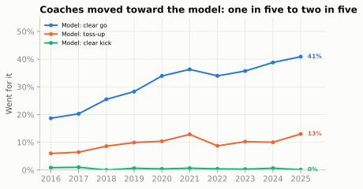
The chart is the aggression shift that The Clock, the Two-Minute Drill, and Fourth Down and The Modern Era describe, seen through the model. Three things stand out. The movement is real but incomplete: even in 2025, teams punted or kicked on more than half of the fourth downs where the model saw a clear gain from going. It is one-sided: teams almost never go for it when the model says kick, so the decades of “mistakes” were all conservative ones. And it paid: counting only clear mistakes (a choice that trailed the best option by at least a point), the average team gave up about 5.0 WP points per game in 2016 and about 3.1 in 2025. Over a 17-game season the difference is about 0.3 wins a team, and the teams that changed first collected it first.
How far should you trust those levels? Romer’s estimate, the best-known number, was about 2 WP points a game, well under our 2016 figure. The two are not measuring the same thing: Romer built his in expected points from early-game situations, while ours counts every clear mistake through three quarters in win probability. But our model is also more aggressive than the published ones: it calls 36% of all graded fourth downs a clear go, and its red-zone and late-game blind spots (above) lean toward going. So treat the levels as an upper bound. The trend is the robust part, and it survives every reasonable change to the grading:
def summary(f):
tr = f.pivot_table(index="season", columns="call", values="went", aggfunc="mean")["clear go"]
lp = lost_per_game(f)
return {"clear go, 2016 (%)": 100 * tr.loc[2016], "clear go, 2025 (%)": 100 * tr.loc[2025],
"WP pts lost/game, 2016": 100 * lp.loc[2016], "WP pts lost/game, 2025": 100 * lp.loc[2025]}
md_table(pd.DataFrame({"As above (5 minutes, 1 WP point)": summary(f4),
"Ten-minute cutoff": summary(grade(cutoff_min=10)),
"Clear means 2 WP points": summary(grade(threshold=0.02))}).T
.rename_axis("grading").reset_index(), widths=[16, 8, 8, 8, 8])| grading | clear go, 2016 (%) | clear go, 2025 (%) | WP pts lost/game, 2016 | WP pts lost/game, 2025 |
|---|---|---|---|---|
| As above (5 minutes, 1 WP point) | 18.7 | 40.9 | 5.0 | 3.1 |
| Ten-minute cutoff | 18.4 | 40.3 | 4.4 | 2.8 |
| Clear means 2 WP points | 23.9 | 51.6 | 4.1 | 2.3 |
Team by team
t3 = f4[f4.season.between(2023, 2025)]
games3 = t3.groupby("posteam").game_id.nunique()
teams = pd.DataFrame({
"follow": t3[t3.call == "clear go"].groupby("posteam").went.mean(),
"lost_pg": t3.groupby("posteam").wp_lost.sum() / games3,
"lost_going_pg": t3[t3.went == 1].groupby("posteam").wp_lost.sum().reindex(games3.index, fill_value=0)
/ games3,
"n_go_spots": t3[t3.call == "clear go"].groupby("posteam").size()})
not_going_share = f4.loc[f4.went == 0, "wp_lost"].sum() / f4.wp_lost.sum()
det_by_year = f4[(f4.posteam == "DET") & (f4.call == "clear go")].groupby("season").went.mean()
lg_by_year = f4[f4.call == "clear go"].groupby("season").went.mean()
det_lost_rank = int(teams.lost_pg.rank().loc["DET"])
det_rank = (f4[(f4.call == "clear go") & f4.season.between(2021, 2025)]
.groupby(["season", "posteam"]).went.mean().groupby("season")
.rank(ascending=False).xs("DET", level="posteam"))
print(teams.sort_values("follow", ascending=False).head(5).round(3))
print(f"Share of all WP lost that came from NOT going: {not_going_share:.1%}")
print("Detroit's rank on clear-go follow rate, 2021-2025:", det_rank.astype(int).to_dict()) follow lost_pg lost_going_pg n_go_spots
posteam
DET 0.646 0.017 0.001 96
BUF 0.547 0.017 0.000 86
PHI 0.516 0.019 0.000 91
CAR 0.492 0.033 0.000 120
GB 0.488 0.021 0.000 84
Share of all WP lost that came from NOT going: 99.3%
Detroit's rank on clear-go follow rate, 2021-2025: {2021: 7, 2022: 5, 2023: 1, 2024: 1, 2025: 1}Show the plotting code
def plot_teams(teams):
fig, ax = plt.subplots(figsize=(6.5, 4.2))
others = teams.drop(index="DET")
ax.scatter(100 * others.follow, 100 * others.lost_pg, s=28, color=style.MUTED, alpha=0.75,
edgecolor=style.SURFACE, linewidth=0.6, zorder=3)
ax.scatter(100 * teams.loc["DET", "follow"], 100 * teams.loc["DET", "lost_pg"], s=60,
color=style.SERIES[0], edgecolor=style.SURFACE, linewidth=0.8, zorder=4)
for tm in ["DET", "BUF", "PHI", "CAR", "LAC", "PIT", "SEA", "BAL", "KC"]:
dx, ha = (-0.9, "right") if tm in ("DET", "SEA") else (0.9, "left")
dy = 0.17 if tm == "DET" else 0.0
ax.text(100 * teams.loc[tm, "follow"] + dx, 100 * teams.loc[tm, "lost_pg"] + dy, tm,
fontsize=7.5, ha=ha, va="center",
color=style.SERIES[0] if tm == "DET" else style.INK_2,
fontweight="bold" if tm == "DET" else "normal")
coef = np.polyfit(100 * teams.follow, 100 * teams.lost_pg, 1)
xx = np.array([25, 69])
ax.plot(xx, np.polyval(coef, xx), color=style.BASELINE, lw=1, ls=(0, (4, 3)), zorder=1)
ax.set_xlim(22, 72)
ax.set_ylim(1.0, 5.6)
ax.set_xlabel("Went for it on clear-go fourth downs (%)")
ax.set_ylabel("WP points given up per game")
ax.set_title("Follow the model, keep the win probability")
plt.show()plot_teams(teams)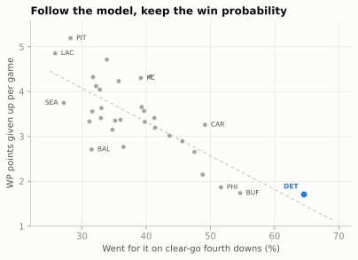
Read the slope with care: 99% of all the win probability lost in this grading comes from not going on a clear-go fourth down, so a team that goes more often on those downs loses less almost by definition. The finding that isn’t built in is the other half: aggression didn’t cost anyone. No team gave up more than 0.09 WP points a game by going for it when the model said kick.
NoteFilm room: Lions 2021-2025, Dan Campbell against the model
Dan Campbell’s reputation for fourth-down aggression is documented in Case Study: The Lions by go rates and points. The model lets you ask a sharper question: when the numbers said go, did he? On clear-go fourth downs Detroit went for it 47% of the time in 2021 (the league: 36%), and 69% in 2024 (league: 39%). Its rank on that measure, season by season from 2021 to 2025: 7, 5, 1, 1, 1. Over 2023-2025 combined Detroit followed the model on 65% of clear-go fourth downs, the highest rate in the league, and ranked 1 of 32 (1 = fewest) in win probability given up per game to clear fourth-down mistakes, essentially level with Buffalo (1.71 against 1.74 WP points a game).
What to notice: following the model is not the same as going for it all the time. Detroit’s go rate on clear-kick fourth downs was still near zero. Campbell’s aggression was aimed at the short- yardage, middle-of-the-field fourth downs where the math is lopsided. The two NFC Championship Game decisions that defined his reputation for critics were close calls by the published models (ESPN and Next Gen Stats); this chapter’s simpler model, weakest in the fourth quarter, called the second one a clear go. And notice how the first one failed: Jared Goff’s fourth-and-2 pass hit Josh Reynolds, who couldn’t hold on.18 A dropped ball is an execution result, not a decision; grade the call by the information the coach had before the snap. The fair grade is the whole season’s ledger, not the two snaps everyone remembers.
Two-point decisions: down 14 and down 8
The two-point decision is the cleanest decision tree in football, because it is one play with two outcomes and a short future. Since the extra point moved back in 2015, the two tries have been almost exactly equal in expected points:
tries = reg[(reg.two_point_attempt == 1) | (reg.extra_point_attempt == 1)].copy()
tries["two"] = (tries.two_point_attempt == 1).astype(float)
P2 = (tries.loc[tries.two == 1, "two_point_conv_result"] == "success").mean()
PX = (tries.loc[tries.two == 0, "extra_point_result"] == "good").mean()
print(f"2016-2025: two-point tries succeeded {P2:.1%} of the time "
f"({int(tries.two.sum()):,} tries) = {2 * P2:.2f} points; "
f"extra points good {PX:.1%} = {PX:.2f} points")2016-2025: two-point tries succeeded 47.8% of the time (1,225 tries) = 0.96 points; extra points good 94.4% = 0.94 pointsWhen the averages are equal, the score decides, and the most debated score is this one: you were down 14, you just scored a touchdown, and you are now down 8 before the try. The traditional move is to kick (down 7) and plan to kick again after the next touchdown to force overtime. The analytics move is to go for two now. Here is the whole tree, assuming you score the second touchdown and the opponent doesn’t score again (the only world in which this decision matters), and that overtime is a coin flip.
- Kick first. Make it (probability \(k\)) and you’re down 7; after the next touchdown you are down 1, and you take the better of kicking for overtime (\(k \times \tfrac12\)) or going for the win (\(p\)). Miss it, and you’re down 8; after the next touchdown you are down 2 and must go for two to reach overtime (\(p \times \tfrac12\)).
- Go for two first. Make it (probability \(p\)) and you’re down 6; the next touchdown ties the game and the extra point wins it (\(k\), or overtime if it misses). Miss it, and you’re down 8; after the next touchdown you are down 2 and go for two to tie (\(p \times \tfrac12\)).
\[ W_\text{kick first} = k \cdot \max\left(\tfrac{k}{2},\, p\right) + (1-k)\,\tfrac{p}{2}, \qquad W_\text{go first} = p\left(k + \tfrac{1-k}{2}\right) + (1-p)\,\tfrac{p}{2} \]
def w_kick_first(p, k=PX, ot=0.5):
return k * np.maximum(k * ot, p) + (1 - k) * p * ot
def w_go_first(p, k=PX, ot=0.5):
return p * (k + (1 - k) * ot) + (1 - p) * p * ot
ps = np.linspace(0.25, 0.65, 401)
breakeven_p = ps[np.argmax(w_go_first(ps) > w_kick_first(ps))]
print(f"At p = {P2:.3f}: kick first {w_kick_first(P2):.1%}, go first {w_go_first(P2):.1%}; "
f"going first is better whenever p > {breakeven_p:.3f}")
for ot in (0.4, 0.6):
print(f" if you win {ot:.0%} of overtimes: kick first {w_kick_first(P2, ot=ot):.1%}, "
f"go first {w_go_first(P2, ot=ot):.1%}")At p = 0.478: kick first 46.4%, go first 58.9%; going first is better whenever p > 0.352
if you win 40% of overtimes: kick first 46.2%, go first 56.1%
if you win 60% of overtimes: kick first 55.1%, go first 61.7%Show the plotting code
def plot_down14(ps, p_league, breakeven_p):
fig, ax = plt.subplots(figsize=(6.5, 3.5))
ax.plot(ps, w_go_first(ps), color=style.SERIES[0], lw=2, label="Go for two after the first TD")
ax.plot(ps, w_kick_first(ps), color=style.SERIES[1], lw=2, label="Kick first (then the better choice)")
ax.axvline(p_league, color=style.BASELINE, lw=1, ls=(0, (3, 2)))
ax.text(p_league + 0.004, 0.27, f"league 2016-25:\n{pct(p_league, 1)}", fontsize=7.5,
color=style.INK_2, va="bottom")
ax.axvline(breakeven_p, color=style.BASELINE, lw=1)
ax.text(breakeven_p - 0.004, 0.62, f"break-even\n{pct(breakeven_p)}", fontsize=7.5,
color=style.INK_2, ha="right", va="top")
for f, c, dx, dy, ha, va in [(w_go_first, style.SERIES[0], -0.012, 0.02, "right", "bottom"),
(w_kick_first, style.SERIES[1], 0.008, -0.022, "left", "top")]:
ax.scatter([p_league], [f(p_league)], s=26, color=c, zorder=4, edgecolor=style.SURFACE)
ax.text(p_league + dx, f(p_league) + dy, pct(f(p_league)), fontsize=7.5, color=c,
fontweight="bold", ha=ha, va=va)
ax.set_xlim(0.25, 0.65)
ax.set_ylim(0.25, 0.72)
fmt = plt.FuncFormatter(lambda v, _: f"{v:.0%}")
ax.xaxis.set_major_formatter(fmt)
ax.yaxis.set_major_formatter(fmt)
ax.set_xlabel("Your two-point success rate")
ax.set_ylabel("Win probability, given two TDs")
ax.set_title("Down 14: go for two on the first touchdown")
ax.legend(loc="upper left", fontsize=7.5)
plt.show()plot_down14(ps, P2, breakeven_p)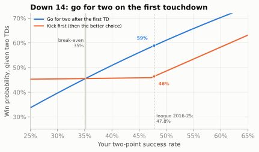
Kicking twice aims the entire comeback at overtime, which you win half the time. Going early gives you a roughly even chance of turning the second touchdown into an outright win, and when the first try fails you still have the overtime route, just with a two-pointer attached, and you know it while there is still time to plan the last drive. That knowledge is a bonus the formula doesn’t count: a team that knows it needs two scores can play the rest of the game accordingly (going for it on fourth down, for instance), while the kick-first team learns about a missed extra point too late to adjust.
Three assumptions are worth testing. Overtime. Under the rule in force since 2025, both teams get a possession in regular-season overtime and a tie is possible, so “a coin flip” is really “your chance of winning overtime, counting a tie as half.” The ot= argument lets you change it. A clear underdog that expects to win only 40% of overtimes should still go first (56% against 46%); the edge shrinks a little, because the failed-try branch also runs through overtime. Two touchdowns and nothing else. If the opponent might score again, or you might settle for a field goal, the comparison shifts. The clock. Down 14 in the second or third quarter, many possessions remain and the margin will change several times before it matters, so the early information is worth less and most teams kick; the down-14 rule is a fourth-quarter rule.
Down 8 before you score needs no tree at all: a touchdown leaves you down 2, and you must go for two to tie. The other margins on the two-point chart in The Clock, the Two-Minute Drill, and Fourth Down (go when down 2, 5 or 10, or up 1, 5, 12 or 15 after the touchdown) follow from the same kind of tree: ask which future scores each outcome leaves you needing. Have coaches absorbed the down-14 logic? The data say yes, and quickly.
Show the plotting code
def plot_down8(rate):
fig, ax = plt.subplots(figsize=(6.5, 3.3))
for k, c in enumerate(rate.columns):
ax.plot(rate.index, rate[c], color=style.SERIES[k], lw=2, marker="o", ms=4, label=c)
ax.text(2025.2, rate.loc[2025, "Fourth quarter"], pct(rate.loc[2025, "Fourth quarter"]),
fontsize=7.5, color=style.SERIES[0], va="center", fontweight="bold")
ax.set_xlim(2015.6, 2025.9)
ax.set_ylim(0, 0.65)
ax.set_xticks(range(2016, 2026))
pct_axis(ax)
ax.set_ylabel("Went for two")
ax.set_title("Down 14, then a touchdown: from never going for two to half the time")
ax.legend(loc="upper left", fontsize=7.5)
plt.show()d8 = tries[tries.score_differential == -8] # margin before the try: down 8 after the TD
d8_rate = pd.DataFrame({"Fourth quarter": d8[d8.qtr == 4].groupby("season").two.mean(),
"Any quarter": d8.groupby("season").two.mean()})
plot_down8(d8_rate)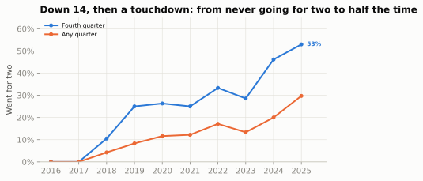
Timeouts: pricing the clock
The third decision in this chapter’s title is the quietest. The Clock, the Two-Minute Drill, and Fourth Down showed what a timeout buys: a stop of the clock that saves 30 to 40 seconds when the other team wants it running. What is that worth in wins? Our random-walk model can’t say (it doesn’t know timeouts exist), but nflverse’s model can, because timeouts are among its inputs. Take every snap in the last 1:00-2:30 of a one-score game and ask how nflverse’s win probability moves with each team’s timeouts, holding the score, field position, down, distance and clock fixed with a regression. A timeout’s value should depend on who needs the clock stopped, so the cell fits the trailing, tied and leading offense separately.
lt = reg[(reg.qtr == 4) & reg.game_seconds_remaining.between(60, 150) & reg.down.notna()
& reg.score_differential.between(-8, 8) & reg.wp.notna()]
def timeout_value(s):
"""nflverse WP points per timeout (the offense's own, the defense's), holding each score
margin, field position, clock, down and distance fixed with a linear regression."""
margin = pd.get_dummies(s.score_differential.astype(int), drop_first=True, dtype=float)
X = np.column_stack([np.ones(len(s)), s.posteam_timeouts_remaining,
s.defteam_timeouts_remaining, margin.to_numpy(), s.yardline_100,
s.game_seconds_remaining, s.down, s.ydstogo])
c = np.linalg.lstsq(X, s.wp.to_numpy(), rcond=None)[0]
return {"snaps": len(s), "each own timeout": 100 * c[1], "each defense timeout": 100 * c[2]}
GROUPS = {"trailing by 1-3": (-3, -1), "trailing by 4-8": (-8, -4), "tied": (0, 0),
"leading by 1-8": (1, 8)}
TO = pd.DataFrame({g: timeout_value(lt[lt.score_differential.between(a, b)])
for g, (a, b) in GROUPS.items()}).T
md_table(TO.rename_axis("offense, last 1:00-2:30").reset_index(), widths=[14, 6, 9, 9])| offense, last 1:00-2:30 | snaps | each own timeout | each defense timeout |
|---|---|---|---|
| trailing by 1-3 | 1,896 | 1.2 | -0.9 |
| trailing by 4-8 | 2,902 | 0.5 | -0.7 |
| tied | 972 | 1.0 | -1.0 |
| leading by 1-8 | 2,869 | 0.1 | -0.3 |
The table is in WP points for the offense. A timeout is worth most to the team that needs the clock stopped: an offense trailing by a field goal or less gains about 1.2 WP points for each one it holds, while an offense that is ahead gains almost nothing from its own (it wants the clock running anyway), and each timeout the trailing defense holds lowers the leading offense’s chances by only about 0.3. Those are modest numbers, and they explain two habits analysts criticise. Burning a timeout early, to avoid a delay of game or to think about a fourth down, gives away part of that late-game value; a timeout spent in the third quarter costs some of it, not all. Finishing a close loss with timeouts unused is pure waste: a timeout’s whole value is in being spent.
The usual alternative to an early timeout is to take the 5-yard delay-of-game penalty instead, and whether that is cheaper depends on the down:
pen = decide(0, [60, 65], [1, 6], 40) # tied, third quarter: 4th & 1 at own 40, or 4th & 6 at own 35
best = pen[["go", "kick"]].max(axis=1)
print(f"4th & 1 at own 40: best option {best[0]:.1%} (go by {100 * pen.gain[0]:+.1f}); "
f"after a 5-yard penalty, 4th & 6 at own 35: best option {best[1]:.1%} "
f"-> the penalty costs {100 * (best[0] - best[1]):.1f} WP points")4th & 1 at own 40: best option 52.1% (go by +4.2); after a 5-yard penalty, 4th & 6 at own 35: best option 47.4% -> the penalty costs 4.7 WP pointsOn first or second down, or when you are going to kick anyway, take the penalty. On a fourth-and-short you plan to go for, it turns a clear go into a punt and costs about 5 WP points, several times what a timeout is worth, so spend the timeout. When to spend the rest, when a defense should let the opponent score to get the ball back, and when to kneel are mostly clock arithmetic, and the flowchart in The Clock, the Two-Minute Drill, and Fourth Down covers them.
The most theatrical timeout has the weakest case. Icing the kicker, the timeout called just before the opponent’s late field-goal try, gets one shot per kick: a defense that tries to call a second timeout in the same dead-ball period to freeze the kicker is flagged for unsportsmanlike conduct.19 Not every timeout before a late kick is icing, though. When the kicking team is already ahead, the trailing defense is usually stopping the clock to save time for its own possession, so the cell keeps only the classic icing spot: kicks that would tie the game or take the lead.
fgl = reg.sort_values(["game_id", "play_id"])
prev_def_to = (fgl.timeout.shift(1).eq(1) & (fgl.timeout_team.shift(1) == fgl.defteam))
late_fg = fgl[(fgl.play_type == "field_goal") & (fgl.qtr == 4) & (fgl.game_seconds_remaining <= 120)].copy()
late_fg["iced"] = np.where(prev_def_to.loc[late_fg.index], "Iced (defense's timeout just before)",
"Not iced")
late_fg["made"] = (late_fg.field_goal_result == "made").astype(float)
late_fg["expected"] = p_fg(late_fg.kick_distance)
n_to = (late_fg.iced != "Not iced").sum()
n_ahead = ((late_fg.iced != "Not iced") & (late_fg.score_differential > 0)).sum()
clutch = late_fg[late_fg.score_differential.between(-3, 0)] # the kick ties it or takes the lead
ice = clutch.groupby("iced").agg(kicks=("made", "size"), made=("made", "mean"),
expected=("expected", "mean"), distance=("kick_distance", "mean"))
ice["made - expected"] = ice.made - ice.expected
ice_se = np.sqrt(0.2 * 0.8 / ice.loc[ice.index.str.startswith("Iced"), "kicks"].iloc[0])
print(f"{n_to} late kicks followed a defensive timeout; {n_ahead} of them with the kicker's team ahead")
md_table(ice.assign(made=100 * ice.made, expected=100 * ice.expected,
**{"made - expected": 100 * ice["made - expected"]})
.rename(columns={"made": "made (%)", "expected": "expected (%)",
"made - expected": "made - expected (pts)"}).reset_index()
.rename(columns={"iced": "last-2-minute kicks to tie or lead, 2016-2025"}),
widths=[24, 6, 7, 8, 7, 9])161 late kicks followed a defensive timeout; 37 of them with the kicker's team ahead| last-2-minute kicks to tie or lead, 2016-2025 | kicks | made (%) | expected (%) | distance | made - expected (pts) |
|---|---|---|---|---|---|
| Iced (defense’s timeout just before) | 116 | 75.0 | 81.3 | 43.3 | -6.3 |
| Not iced | 297 | 76.4 | 80.8 | 42.8 | -4.3 |
Iced kicks were made about 6 percentage points less often than their distance predicts. But un-iced kicks in the same spot also fell short, by about 4 (pressure, weather and bad spots are part of every late kick), so icing’s own effect is the difference, a couple of points, and with only 116 iced kicks the uncertainty (a standard error of about 4 points) is larger than that. Earlier studies reached the same verdict: no reliable evidence that icing works, and a real cost, because the timeout might have been worth more saved for the next possession.20 This is the pattern of the whole chapter in miniature: a tradition that feels powerful, a data set that can’t confirm it, and a model that prices what the tradition costs.
Watch for it on Sunday
TipWatch for it
Be the bot. Make every fourth-down call live, before the offense decides, then check it against a model afterwards.
- Start on third down: is this four-down territory? Staffs often decide before the series whether fourth down is in play, and it changes the third-down call: a run on third-and-4 to set up fourth-and-1, or a deep shot on third-and-2 because fourth down is a free play.
- On fourth down, find the break-even rate in your head from the map’s shape: just under half in your own half, around a third near the opponent’s 40, the 20s near the goal line. Set it against the conversion chance: two in three on fourth-and-1, about half on fourth-and-4, less inside the 10.
- Then adjust for the score and clock. Leading late: kicks gain value. Trailing late: kicks lose it, especially a field goal that doesn’t tie.
- Then adjust for the teams and the play. A sneak-heavy offense, a great line or a weak defense raises this play’s chance; a strong kicker makes the 50-yarder more attractive. This is the part the bot can’t do.
- Make your call, and say how close it is. “Go, easily” or “toss-up, lean go.” The size matters more than the sign.
- After a touchdown when down 14, say “go for two” before the extra-point unit runs on, and watch whether the coach agrees (about half do now).
- Check whether the broadcast bar knows the spread. At kickoff, a bar near 50% (or about 57% for the home team) is a situation-only model; one that starts with the favourite well ahead was given the line. Then estimate the WPA of the big plays: was the biggest swing a score, or a high-leverage third down?
- Afterwards, look the decision up: the nfl4th calculator, a team’s analytics account, or the code in this chapter (
decide(lead, yardline_100, yards_to_go, minutes_left)). Log your calls in your prediction log with the model’s gain; Film Study and Charting shows how to score your calibration.
Predict the play
The pictures use the course’s position letters: on offense X, Z and H are wide receivers, Y and U tight ends, F the fullback and T or R the running back; on defense E is an end, T a tackle, N a nose tackle, S, M and W the strong-side, middle and weak-side linebackers, C a cornerback, $ the nickel back, and FS and SS the safeties.
Show the drawing helper
from gridiron import Play, offense, defense
def situation(off, dfn, los, to_go, title, lateral=(-16, 16), window=None, width_in=5.6):
"""A pre-snap picture. The yellow line to gain is drawn by hand, with gaps around any
player standing on it, so it never runs through a label."""
p = Play(off, dfn, los=los, to_go=None, title=title)
fld = p.draw(lateral=lateral, window=window, width_in=width_in)
x = los + to_go # BDB x of the line to gain
xy = [fld.xy(*p.to_abs(q.d, q.w)) for q in p.players.values()]
gaps = sorted((float(px) - 1.4, float(px) + 1.4) for px, py in xy if abs(float(py) - x) < 1.3)
a, segs = 0.0, []
for g0, g1 in gaps:
if g0 - a > 1.6: # drop crumbs between linemen
segs.append((a, g0))
a = max(a, g1)
segs.append((a, 160 / 3))
for s0, s1 in segs:
fld.ax.plot([s0, s1], [x, x], color=style.LINE_TO_GAIN, lw=2.2, zorder=2,
solid_capstyle="butt")
plt.show()
TipPredict the play
Fourth-and-1 at your own 34, first quarter, 0-0. The offense stays on the field in a two-back I-formation. The defense keeps its base 4-3 on the field and walks the strong safety down outside the tight end: eight in the box. Should the offense go for it or punt? What is the break-even conversion rate? If it goes, what kind of play attacks this front, and why doesn’t the eighth defender matter much to it? And what did NFL teams actually do here a decade ago and in 2025?
off = offense("i_form")
y_w = next(q.w for q in off if q.key == "Y") # the tight end's side
dfn = []
for q in defense("4-3_under", "single_high", off):
if q.pos == "CB":
q = q.moved(d=1.5) # short yardage: corners press
elif q.key == "SS":
q = q.moved(d=5.0, w=y_w + 1.5) # eighth man, outside shoulder of the TE
elif q.key == "FS":
q = q.moved(d=9.5) # the lone safety cheats down
dfn.append(q)
situation(off, dfn, los=44, to_go=1, title="4th & 1, own 34, 1st quarter, 0-0",
lateral=(-17, 17), window=(-9, 13))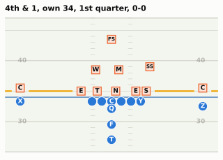
TipAnswer
dr1 = decide(0, 66, 1, 52).iloc[0]
zone = reg[(reg.down == 4) & reg.play_type.isin(["pass", "run", "punt", "field_goal"])
& (reg.ydstogo == 1) & reg.yardline_100.between(60, 70) & (reg.qtr <= 3)
& reg.wp.between(0.3, 0.7)]
went = zone.groupby("season").play_type.apply(lambda s: s.isin(["pass", "run"]).mean())
print(f"Go {dr1.go:.1%} vs punt {dr1.punt:.1%}: gain {100 * dr1.gain:+.1f} WP pts; "
f"break-even {dr1.breakeven:.0%}; P(convert) {dr1.p_conv:.0%}")
print(f"Teams went for it on 4th & 1 at their own 30-40 (Q1-3, close games): "
f"{went.loc[2016]:.0%} in 2016, {went.loc[2025]:.0%} in 2025 ({len(zone)} fourth downs)")
# Quarterback sneaks (FTN charting flag, 2023-2025) on third and fourth and 1
ftn = nfl().load_ftn_charting([2023, 2024, 2025]).to_pandas()
short = reg[(reg.season >= 2023) & reg.down.isin([3, 4]) & (reg.ydstogo == 1)
& reg.play_type.isin(["pass", "run"]) & (reg.qb_kneel != 1)]
short = short.merge(ftn[["nflverse_game_id", "nflverse_play_id", "is_qb_sneak"]], how="left",
left_on=["game_id", "play_id"], right_on=["nflverse_game_id", "nflverse_play_id"])
short["conv"] = short.yards_gained >= short.ydstogo
short["sneak"] = short.is_qb_sneak.eq(True)
sneak = short.groupby("sneak").conv.mean()
by_team = short[short.sneak].groupby("posteam").conv.agg(["mean", "size"])
print(f"3rd/4th & 1, 2023-2025: QB sneaks converted {sneak[True]:.0%} ({short.sneak.sum()}), "
f"every other play {sneak[False]:.0%}; PHI sneaks {by_team.loc['PHI', 'mean']:.0%}, "
f"BUF {by_team.loc['BUF', 'mean']:.0%}")Go 50.9% vs punt 47.6%: gain +3.3 WP pts; break-even 48%; P(convert) 69%
Teams went for it on 4th & 1 at their own 30-40 (Q1-3, close games): 4% in 2016, 61% in 2025 (322 fourth downs)
3rd/4th & 1, 2023-2025: QB sneaks converted 82% (674), every other play 66%; PHI sneaks 83%, BUF 91%Go. The break-even rate is just under 50%, and a league-average offense converts fourth-and-1 about two times in three. Failure hands the opponent the ball at your 34, which hurts, but a punt from here only moves the ball about 40 yards, and the conversion keeps a drive alive with three more downs. The gain of about three WP points is one of the largest routine edges on the fourth-down map.
The eighth defender doesn’t change that, because of where he is. The strong safety has added a body outside the tight end, which is where an off-tackle run or a toss would go. A quarterback sneak or tush push goes straight ahead, beside the center, where the front already has its men and the extra safety can’t get to in time. In 2023-2025 sneaks on third- and fourth-and-1 converted 82% of the time against 66% for every other play (teams choose when to sneak, so part of that gap is selection), and the specialists were higher still: Philadelphia 83%, Buffalo 91%. With eight men near the line and only one deep safety, play-action off the same look is the other answer.
And the behaviour change is dramatic: in 2016, teams in close games went for it on fourth-and-1 at their own 30 to 40 about 4% of the time; in 2025, about 61%.
TipPredict the play
Fourth-and-3 at the opponent’s 8, fourth quarter, 6:30 left. You trail 21-17. The offense lines up with three receivers to the right, one of them the tight end attached to the line. The defense is in nickel with its safeties on the goal line: the end zone is only 10 yards deep, so nobody needs to play deeper. Kick the 26-yard field goal to make it 21-20, or go for it? Is the league’s usual fourth-and-3 conversion rate a fair number to use from here? And how does the answer differ from the same fourth down in a tied first quarter?
off = [q.moved(w=-17.5) if q.key == "X" else q for q in offense("gun_trips")]
dfn = []
for q in defense("nickel", "two_high", off):
if q.key in ("FS", "SS"):
q = q.moved(d=8.0) # on the goal line, 8 yards off the ball
elif q.pos == "CB":
q = q.moved(d=4.0)
dfn.append(q)
situation(off, dfn, los=102, to_go=3, title="4th & 3 at the 8, down 21-17, 6:30 left",
lateral=(-20, 20), window=(-8, 18))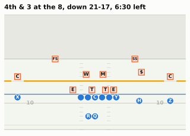
TipAnswer
late_r = decide(-4, 8, 3, 6.5).iloc[0]
early_r = decide(0, 8, 3, 55).iloc[0]
print(f"Down 4, 6:30 left: go {late_r.go:.1%}, FG {late_r.fg:.1%} -> gain {100 * late_r.gain:+.1f} "
f"WP pts, break-even {late_r.breakeven:.0%}, P(convert) inside the 10 {late_r.p_conv:.0%}")
print(f"Tied, Q1: go {early_r.go:.1%}, FG {early_r.fg:.1%} -> gain {100 * early_r.gain:+.1f} "
f"WP pts, break-even {early_r.breakeven:.0%}")Down 4, 6:30 left: go 41.9%, FG 33.1% -> gain +8.8 WP pts, break-even 22%, P(convert) inside the 10 46%
Tied, Q1: go 57.0%, FG 53.8% -> gain +3.2 WP pts, break-even 25%Go, clearly. The field goal is nearly automatic, but it leaves you trailing 21-20 and kicking off with six minutes left, still needing more points. A conversion leaves first-and-goal inside the 5, where a touchdown is likely and puts you ahead; a failure leaves the opponent backed up at its own 8, so even the bad branch keeps you in the game. The break-even conversion rate is around 22%.
The league’s usual rate is not fair here. This picture is why: with the end zone only 10 yards deep, the defense doesn’t have to protect deep space, so all eleven can crowd the short throws and the sticks. Fourth-and-3 inside the 10 converts about 46% of the time in the model, against 55% between the 10s. It doesn’t matter: the answer would survive even a 30% guess. And because this is a fourth-quarter call, where our model is least trustworthy, look at the size of the gain rather than the exact number: at about 9 WP points it sits far beyond the four-point mark above which, in Brill, Yurko and Wyner’s study, the right call is almost always clear.
The same fourth down in a tied first quarter is still a go, but by about 3 WP points instead of 9: early, three points are worth about their face value, and a near-certain field goal is a decent result. Late and behind, the field goal’s three points are worth much less than three, because they don’t change what you still need. That difference, between points and wins, is the whole reason this chapter exists.
TipPredict the play
You trailed 22-8, and with 9:00 left in the fourth quarter you have just scored a touchdown: it is 22-14. The offense stays on the field at the 2. Kick the extra point (down 7) or go for two (down 6 if it works, still down 8 if it doesn’t)? Now suppose you are a clear underdog and expect to win only 40% of overtimes: does that change the answer, and which way should it push you? What do teams do now?
off = offense("gun_2x2")
h_w = next(q.w for q in off if q.key == "H") # the left slot
dfn = []
for q in defense("nickel", "two_high", off):
if q.key in ("FS", "SS"):
q = q.moved(d=6.5, w=np.sign(q.w) * 6.0) # inside the slots, deep in the end zone
elif q.pos == "CB":
q = q.moved(d=1.0) # press on the outside receivers
elif q.pos == "NB":
q = q.moved(d=3.0) # over the right slot
elif q.key == "WILL":
q = q.moved(d=3.0, w=h_w + 2.5) # walked out to the apex over the left slot
dfn.append(q)
situation(off, dfn, los=108, to_go=2, title="Down 14, then a TD, 9:00 left: kick or go?",
lateral=(-17, 17), window=(-8, 12))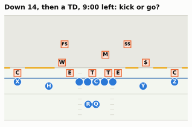
TipAnswer
Go for two. This is the down-14 tree from this chapter: with the league’s 2016-2025 rates, going for two now wins about 59% of the games in which you score the next touchdown and stop the opponent, against 46% for kicking. If the try fails, you know with nine minutes left that you need a touchdown and a two-pointer, and you can manage fourth downs and timeouts accordingly.
Being the underdog doesn’t change the answer: at a 40% overtime chance, going first wins 56% against 46%. It narrows the gap slightly rather than widening it, which surprises most people. The kick-first plan already prefers going for the win after the second touchdown (a 48% two-pointer beats a 47% route through overtime), so a worse overtime barely touches it, while the go-first plan still sends its failed-try branch to overtime.
What do teams do? In 2016 and 2017 nobody in this spot went for two. In 2025, about 53% of fourth-quarter tries at down 8 were two-point attempts: the fastest-moving decision in this chapter, and a sign that when a decision is a single clean tree, coaches adopt the math quickly.
Takeaways
- Win probability is a model of the rest of the game. A random walk of points, scaled by √(time left) and started from the lead plus the possession’s expected points, matches nflverse’s machine-learning model on 2025 data; the betting line adds what both lack, which team is better. Check a model by its calibration, not by one game: 99% means one collapse in a hundred, and Super Bowl LI was one.
- WPA scores plays by how much they changed the chance of winning, and leverage says how much a situation lets a play matter. A tenth of plays carry about two-fifths of all win-probability movement.
- A fourth-down decision is a probability tree, and the break-even conversion rate is the number to carry: go if you believe this play converts more often than that. The score and clock move the bar; the team, the play call and the field position move the conversion chance.
- Respect the model’s limits. Simple models break in the last minutes, where scoring is lumpy and the clock is controllable. Every model assumes average teams, and models disagree by a point or more on close calls. Read the size of the gain, not just its sign.
- Coaches moved toward the math, partly. On clear-go fourth downs the go rate doubled from 2016 to 2025 but stayed under half; the down-14 two-point decision went from never to about half of fourth-quarter tries. Detroit followed the model more often than any other team.
Connections
Builds on: Expected Points, EPA, and Success Rate (the EP values that become the “possession” term in the WP model), The Clock, the Two-Minute Drill, and Fourth Down (the decisions, heuristics and go-rate history), and Working with nflverse Data in Python. The history of the 2009 fourth-and-2 is in Dynasties and Counterpunches, and the aggression era in The Modern Era.
Sets up:
- Tendencies: PROE, Personnel, Motion, and Coverage: the neutral-situation filter and “over expected” metrics, which use win probability to decide which plays count.
- Film Study and Charting: calibration and the Brier score applied to your own predictions, including your fourth-down calls.
- Case Study: The Lions and Case Study: The Eagles: the two franchises that made short-yardage fourth downs part of their identity.
If you want to go deeper: Ben Baldwin’s nfl4th documentation and his nflfastR model write-ups on Open Source Football;21 Hal Stern’s two papers on the normal and Brownian-motion models; David Romer’s “Do Firms Maximize?”; and Brill, Yurko and Wyner’s “Analytics, have some humility” for the case that the models are less certain than their graphics. For the clock and score logic behind two-point charts, the FiveThirtyEight piece on Dick Vermeil’s chart cited in 10-04 is a good start.
Super Bowl LI, February 5, 2017, NRG Stadium, Houston: New England 34, Atlanta 28 (OT), the first Super Bowl to go to overtime and the largest comeback in Super Bowl history (25 points); Atlanta led 28-3 after Tevin Coleman’s touchdown with 8:31 left in the third quarter: https://en.wikipedia.org/wiki/Super_Bowl_LI. Win probabilities are nflverse’s
home_wpfor game2016_21_NE_ATL(Atlanta was the designated home team).↩︎nflverse play-by-play loaded with nflreadpy (https://github.com/nflverse/nflreadpy) and cached in
data/cache/; regular seasons 2016-2025 (plus the two playoff games named in the text); data retrieved October 2026. nflverse revises past seasons occasionally, so re-running the code can move the last decimal place. Columns are described in the play-by-play dictionary: https://nflreadr.nflverse.com/articles/dictionary_pbp.html.↩︎Hal Stern, “On the Probability of Winning a Football Game,” The American Statistician 45, no. 3 (1991): 179-183 (NFL margins around the point spread approximately normal with standard deviation about 13.86), https://doi.org/10.1080/00031305.1991.10475798; Hal S. Stern, “A Brownian Motion Model for the Progress of Sports Scores,” Journal of the American Statistical Association 89, no. 427 (1994): 1128-1134, https://doi.org/10.1080/01621459.1994.10476851.↩︎
Ben Baldwin, “nflfastR EP, WP, and CP models,” Open Source Football, September 2020, updated February 2021 (the XGBoost win-probability model, its inputs, and the separate spread-adjusted version): https://www.opensourcefootball.com/posts/2020-09-28-nflfastr-ep-wp-and-cp-models/.↩︎
Brian Burke’s win-probability work at Advanced NFL Stats (founded 2007): ESPN Press Room bio, https://espnpressroom.com/us/bios/brian-burke/; Danny Heifetz, “We Salute You, Founding Fathers of the NFL’s Analytics Movement,” The Ringer, August 15, 2019 (Burke began his win-probability charts in 2008), https://www.theringer.com/2019/08/15/nfl/nfl-analytics-pro-football-focus; Dennis Lock and Dan Nettleton, “Using random forests to estimate win probability before each play of an NFL game,” Journal of Quantitative Analysis in Sports 10, no. 2 (2014): 197-205, https://doi.org/10.1515/jqas-2013-0100; Ronald Yurko, Samuel Ventura and Maksim Horowitz, “nflWAR: A Reproducible Method for Offensive Player Evaluation in Football,” Journal of Quantitative Analysis in Sports 15, no. 3 (2019): 163-183 (nflscrapR’s generalised additive WP model), https://doi.org/10.1515/jqas-2018-0010.↩︎
nflverse play-by-play, game
2016_21_NE_ATL: fourth quarter, 4:40, Atlanta first-and-10 at the New England 22 (Freeman run for −1); 3:56, Ryan sacked by Trey Flowers for −12; 3:50, a 9-yard completion wiped out by offensive holding; 3:38, punt. See also https://en.wikipedia.org/wiki/Super_Bowl_LI.↩︎Sean Wagner-McGough, “Kyle Shanahan explains the play he regrets the most from the Falcons’ Super Bowl loss,” CBS Sports, May 19, 2017 (quoting The Rich Eisen Show): https://www.cbssports.com/nfl/news/kyle-shanahan-explains-the-play-he-regrets-the-most-from-the-falcons-super-bowl-loss; Nick Wagoner, “With lessons learned from SB LI collapse, Kyle Shanahan ‘glad’ to get another title chance,” ESPN, January 20, 2020 (“the whole narrative of ‘if I just would have run it, we would have won,’ I know that wasn’t the case”): https://www.espn.com/nfl/story/_/id/28526247/with-lessons-learned-sb-li-collapse-kyle-shanahan-glad-get-another-title-chance. The 49ers announced his hiring on February 6, 2017, the day after the game: https://www.cbssports.com/nfl/news/49ers-officially-hire-ex-falcons-offensive-coordinator-kyle-shanahan-as-head-coach.↩︎
Tom M. Tango, “Crucial Situations,” The Hardball Times, May 1, 2006 (explaining the Leverage Index he had introduced about four years earlier): https://tht.fangraphs.com/crucial-situations/; FanGraphs Library, “Leverage Index”: https://library.fangraphs.com/misc/li/.↩︎
nflverse play-by-play of the 2023 season’s NFC Championship Game (January 28, 2024, Detroit at San Francisco), game
2023_21_DET_SF: third quarter, 7:03, fourth-and-2 at the San Francisco 28 with Detroit leading 24-10, Goff incomplete; fourth quarter, 7:38, fourth-and-3 at the San Francisco 30 with San Francisco leading 27-24, Goff incomplete; final 34-31.↩︎ESPN Analytics figures, as reported by Jordan Elliott, NBC Sports Bay Area, “Campbell explains disastrous fourth-down decisions vs. 49ers” (January 28, 2024): https://www.nbcsportsbayarea.com/nfl/san-francisco-49ers/campbell-explains-disastrous-fourth-down-decisions-vs-49ers/1696885/, and Denny Carter, NBC Sports, “Dan Campbell did nothing wrong” (January 29, 2024): https://www.nbcsports.com/fantasy/football/news/dan-campbell-did-nothing-wrong. Next Gen Stats (86.8 against 85.8 on the fourth-and-2; 32.7 against 30.2 on the fourth-and-3) as quoted by Ben Solak, The Ringer, “The Hot Read, Conference Championship Edition” (January 29, 2024): https://www.theringer.com/nfl/2024/1/29/24054043/nfl-conference-championship-hot-read-detroit-lions-kansas-city-chiefs.↩︎
David Romer, “Do Firms Maximize? Evidence from Professional Football,” Journal of Political Economy 114, no. 2 (2006): 340-365 (the explanations are discussed on pp. 361-362; the estimate of about 2.1 percentage points a game on p. 360), https://doi.org/10.1086/501171.↩︎
Burke’s numbers as reported by Joe Posnanski, “Why Belichick made right decision,” Sports Illustrated, November 16, 2009 (conversion about 60%; a touchdown from about the 30 with two minutes left about 53% of the time; after a punt about 30%; 78.8% to 70%): https://www.si.com/more-sports/2009/11/16/belichick.↩︎
Ryan S. Brill, Ronald Yurko and Abraham J. Wyner, “Analytics, have some humility: a statistical view of fourth-down decision making,” arXiv:2311.03490 (first posted November 2023; revised January 2025): https://arxiv.org/abs/2311.03490. The numbers quoted (the Patriots-Colts example’s 90% interval of −4% to 5%; confidence in 48% of 2018-2022 fourth-down decisions; coaches right on 91% of confident kick calls and 49% of confident go calls) are from version 6, section 4: https://arxiv.org/html/2311.03490v6.↩︎
Virgil Carter and Robert E. Machol, “Optimal Strategies on Fourth Down,” Management Science 24, no. 16 (1978): 1758-1762 (the quoted conclusion is from the abstract), https://doi.org/10.1287/mnsc.24.16.1758.↩︎
Nieman Lab, “Yes, the Vikings should have gone for it on 4th down, and a New York Times robot knows why” (December 6, 2013), on the Times-Burke collaboration and the switch from expected points to win probability with about ten minutes left: https://www.niemanlab.org/2013/12/yes-the-vikings-should-have-gone-for-it-on-4th-down-and-a-new-york-times-robot-knows-why/; Justin Ellis, Nieman Lab, “Faster, stronger, and with better kickers: The New York Times’ 4th Down Bot gets an upgrade” (October 14, 2015), on the rebuild after Burke moved to ESPN: https://www.niemanlab.org/2015/10/faster-stronger-and-with-better-kickers-the-new-york-times-4th-down-bot-gets-an-upgrade/.↩︎
Ben Baldwin, “NFL fourth-down decisions: The math behind the league’s new aggressiveness,” The Athletic, October 28, 2020; the
nfl4thR package (go-for-it, punt and field-goal models; listed limitations), https://github.com/nflverse/nfl4th (its go-for-it model is trained on third and fourth downs together:data-raw/_go_for_it_and_2pt_models.R) and its README on CRAN, https://cloud.r-project.org/web/packages/nfl4th/readme/README.html; the bot’s account (@ben_bot_baldwin) is described in Brill, Yurko and Wyner (2023).↩︎Next Gen Stats Analytics Team, “Introducing the Next Gen Stats Decision Guide: A new analytics tool for fourth down, two-point conversions,” NFL.com: https://www.nfl.com/news/introducing-the-next-gen-stats-decision-guide-a-new-analytics-tool-for-fourth-do.↩︎
Josh Dubow, Associated Press, “Failed 4th downs contribute to blown lead for Lions in NFC title game loss to 49ers” (January 28, 2024): “Campbell opted to go for it on fourth-and-2 from the 28 but Reynolds couldn’t hold onto Goff’s pass”: https://www.news4jax.com/sports/2024/01/29/failed-4th-downs-contribute-to-blown-lead-for-lions-in-nfc-title-game-loss-to-49ers/. nflverse play-by-play (game
2023_21_DET_SF) records the play as “incomplete short left to 8-J.Reynolds”.↩︎NFL Rule 4, Section 5 (consecutive timeouts in the same dead-ball period are not allowed; a second one called to “freeze” the kicker is unsportsmanlike conduct), as explained by Kevin Seifert, “Why the Seahawks weren’t penalized for calling consecutive timeouts,” ESPN, November 1, 2015: https://www.espn.com/blog/nflnation/post/_/id/186003/why-the-seahawks-werent-penalized-for-calling-consecutive-timeouts.↩︎
Tobias J. Moskowitz and L. Jon Wertheim, Scorecasting: The Hidden Influences Behind How Sports Are Played and Games Are Won (New York: Crown Archetype, 2011): late-game “pressure” field goals, 2001-2009, controlling for distance, found no benefit from icing; summarised in “Football Freakonomics: Why Even Ice a Kicker?” (November 2011): https://freakonomics.com/2011/11/football-freakonomics-why-even-ice-a-kicker.↩︎
nfl4th documentation and research notes: https://www.nfl4th.com/articles/4th-down-research.html; nflfastR model documentation: https://www.nflfastr.com/.↩︎